- ２. 概要 abstract
-
「のどか」は、「窓使いの憂鬱」の派生バージョンです。 サポート開発主体は、「窓使いの憂鬱」とは異なります。お間違いの無いよう、よろしくお願いいたします。
- はじめに
- Windows 10向けの汎用キーバインディング変更ソフトです。
- 実行ファイルには、コードサイニング署名を、またデバイスドライバには構成証明署名を付与し、管理者権限へのアプリへの操作および、x64環境では、x86, x64両方のアプリへの操作が可能です。
- 「窓使いの憂鬱」Version 3.30から「のどか」Version 4.30 までの変更/修正点については、改版履歴を ご覧ください。
- FAQやバグに出ていない情報は、Project nodoka4のチケットもご覧ください。
- Windows 10上での制限事項は、「Windows 10へのインストール関係の情報」をご覧ください。
- キー入れ替えとウィンドウ操作に関する機能
- 特定のキーを入れ替えたり、2 ストロークキーを設定できます。
- 個々のウィンドウに別々のキーバインディングを割り当てることができます。
- Control キーなどのモディファイヤキーを自由に作成することができます。 また英数キーやCapsLockキーが使えないという制限がありません。
- ウィンドウの移動、最大化、最小化するキーを作成できます。 また、ウィンドウのフォーカス変更時にキーイベント発生できます。
- マルチディスプレイ間で、マウスポインタやウィンドウを移動させることができます。4.27で3個以上のモニター時のBugFixしました。
- エディットコントロールを Emacs 風にすることができます。
-
「のどか」を管理者権限で動作させることなく、普通に標準権限で起動させた状態で下記に対応します。
・Windows Vista以降のユーザーアカウント制御が有効な状態でも、標準権限はもちろん、同時に管理者権限で動作しているアプリケーションへキーやマウスイベントを送ることが可能です。
・セキュリティが強化されたIE7以降の保護モードは有効(整合性レベルが異なる)なままで問題ありません。
- マウス、キーボード、ゲームパッド、タッチパッドに対する機能
- マウスフック機能により、マウスイベントをキー入力イベントに変更可能です。-m 引数が必要となります。
- キーボードLLフック機能により、リモートデスクトップのようなデバイスドライバが利用できない環境でも実行可能です。-k引数が必要となります。
- 管理者権限が必要となりますが、ScancodeMapの変更機能も追加しました。キーボードLLフック機能利用時に、キーアップが送られないキー置換機能となります。4.24からの機能であり、-n引数が必要となります。
- 4.22から、従来実現できなかった同じキーの2度押し検出ができるようになりました。(def option UseDoublePress)
- 複数キーボード対応 モディファイヤー K0-からK7-を用いて、最大8個のキーボードからのキー入力を認識し、個別にキー入れ替え可能です。なお4.22にて検出タイミングをDownからUpに改善させました。(def option FakeUp)
- BadUSBによる悪意を持つUSBキーボードデバイスからのキー入力抑止 を実現する設定ファイルを追加しました。複数キーボード対応機能の応用です。
- キーリピート高速化を実装し 、PC性能によりますが、最大1秒間に200回のキーリピートを発生できます。
- 日本語配列キーボードと英語配列キーボードを同時に使用することが可能です。
- IME オン/オフ時のキャレットの点滅時間を変更が可能です。
- ゲームパッドの入力をキーボードやマウスの入力イベントに変更可能です。
- 暫定扱いですが、タッチパッドと併用するときに便利な ThumbSense(サムセンス)対応コードも取り込みました。(Alps/Synapticsタッチパッドはx86/x64環境対応ですが、Cirque GlidePointは、x86環境のみ。ただしSynaptics以外は実環境がなく、ほとんどテストできていません。)
- その他の機能
- シンボルを用いて、一つの設定ファイルをメニューから切り替えて用いることが可能です。
- 設定ファイルのGUI編集を4.22から新しくつくりかえたものに置き換えました。
- デフォルトの dot.nodoka設定ファイルを、のどかGuiEdit用に書き直し、またcontribフォルダにサンプルとして新しい設定ファイルを追加しました。のどかGuiEditから簡単に参照かつ設定可能となりました。
- 設定ファイルを読み込んだ際、デスクトップ上のアイコンの表示を小さなアイコンを用いたListView形式に設定可能です。(Windows 2000非対応)
- 通知領域（タスクトレイ）の「のどか」アイコンの色を変える機能(&IconColor)によって、モードを表現することも可能です。
- お試し機能として、任意のウィンドウや通知領域（タスクトレイ）のアイコンに、&SendPostMessage 文を用いて、任意のウィンドウメッセージを送ることが可能です。
- &ShellExecute 文を用いて、キーを押したときに任意のプログラムの起動が可能です。
- シェアウェアやユーザーサポートについて
- 試用版は、正式版からの制限として、起動後30分で動作停止します。正式版（税込み
1800円）は、https://appletllc.com/ソフトウェア/
にて販売しています。
Paypalを用いてクレジットカードでのお支払い、あるいは銀行振り込みにて購入可能です。 なお将来にわたって、無償バージョンアップを保証するものでは ありません。4.29より前のバージョンからのバージョンアップ版の販売を予定しています。
ソースコードは、Common Public License で http://sourceforge.jp/projects/nodoka4/ にて公開しています。 - ユーザサポートについては、サポートの項をご覧ください。
- 試用版は、正式版からの制限として、起動後30分で動作停止します。正式版（税込み
1800円）は、https://appletllc.com/ソフトウェア/
にて販売しています。
以上のような特徴がありますが、次のような危険性があります。
-
キーボードクラスのフィルタドライバにて、キーの入れ替えを実現しています。そのため、標準とは異なる
キーボードドライバやキーボードフィルタドライバと共存できません。そのような場合は、標準でないドライバを用いるソフトウェアをアンインストールするか、「のどか」の利用をあきらめるしかありません。
標準でないキーボードドライバとは、ロジテックあるいはロジクールのマウス あるいはキーボード付属アプリが使用するドライバや HP社のノートPCに付属するキーボードユーティリティが使用するドライバや、AltIME や、猫まねきのキーボードドライバなどです。
なお、4.12以降のsetupでは、インストール開始時に、キーボードクラスのフィルタドライバ を検出したら、インストール作業を終了するようにしました。 - マウスフックならびに、ゲームパッドでの操作では、Windows Vista以降のユーザアカウント制御によるダイアログが表示された際、キーやマウスのイベントを送ることができないことがあります。
- 他人が使用する可能性のある PC へのインストールは、おやめください。(どのような問題があるかについては、セキュリティ の項を ご覧ください。)
- バグの項や、著作権表示の項、サポートの項も、必ず、ご覧ください。不都合が発生した場合の責任の所在は、試用版ならびに正式版に関わらず、利用者にあります。
- はじめに
- ３. インストール install
Windows 10上でお使いになる場合には、「Windows 10へのインストール関係の情報」もご覧ください。-
-
「のどか」以外のキーボードカスタマイズソフトを利用している場合には、そのソフトのアンインストールを実行してください。
- AutoHotkey や Xkeymacs の場合には「のどか」のデバイスドライバ版と協調動作すると考えますが、不具合が発生した場合、どちらの問題か判りにくくなりやすいので、アンインストールを推奨します。
-
nProtect GameGuard
が動作するプログラムで、「のどか」が動作中だと、キーボード入力できないなどの問題が発生します。「のどか」を自動終了/起動させる
nshell.exe を同梱したので、こちらを用いて、同時動作させないようにすることは可能です。お試しください。
nshell.exeの解説テキスト - VMware Workstationや、VMware Playerも、nodokad.sysと同じように組み込まれるフィルタドライバが存在するため、不都合が発生が高くなります。FAQの最初の項目を、ごらん頂き、レジストリをご確認ください。
- 以前のバージョンの「のどか」を利用している場合や、試用版から正式版へ差し替える場合、
アンインストールせずに、アップデイト(上書き)インストールが可能です
。
- 3. 以降の手順にて、上書きインストールが可能ですが、Windows 10では、上書きインストールの際、のどかを終了させていても、DLLがまだ動いているのでセットアップは失敗します。その場合、一度PCを再起動して、再度インストール作業を実施してください。
- 「窓使いの憂鬱」からの移行の場合には、下記コラム「窓使いの憂鬱」から「のどか」への移行について を ご覧ください。
- デバイスドライバのインストール
のどかを初めてインストールする場合、デバイスドライバのインストールが必要です。
入手されたzipファイルの中のdriversフォルダにおいて、お使いのOSがWindows 10 64bit版の場合には、x64フォルダを、また32bit版の場合には、x86フォルダを開いてください。
そして、そのフォルダのnodokad.infファイルを右クリックしてインストールを選択してください。(以下はx64フォルダです。)
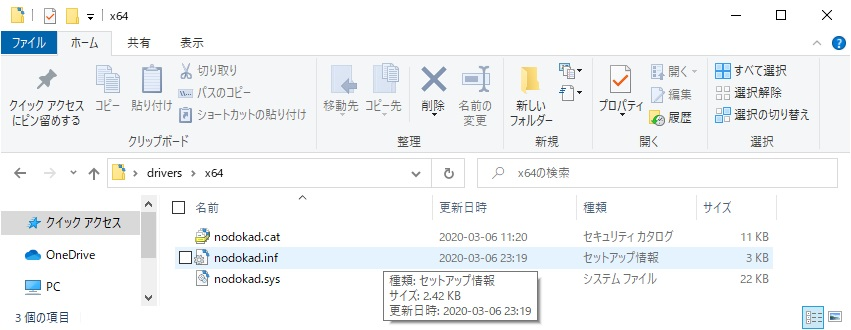
-
アプリのインストール
入手された実行ファイル nodoka-4.30_sample_setup.exe (試用版), nodoka-4.30_setup.exe (正式版)を Administrator（管理者）権限で実行してください。すると「のどか」のインストール作業が開始され 、下記に示すダイアログが表示されます。(ドメインに参加している場合には、ローカルPCの管理者権限での実行が必要です。)
もし、「のどか」実行中の場合では、先に、「のどか」を終了させるかどうか、ダイアログによる問い合わせがあるので、OKで進めてください。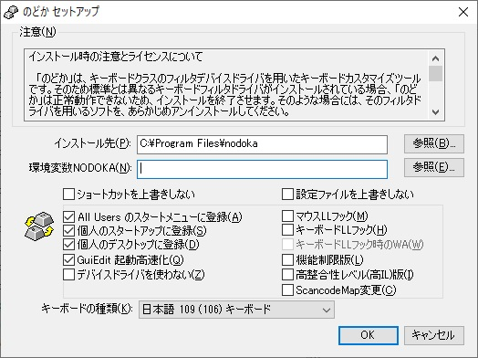
のどかセットアップダイアログ上の各チェックボックスによるオプションは後述します。
OKボタンをクリックすると、インストールのために、ファイルコピーが実行されます。
もし、キーボードクラスのフィルタドライバが別に存在する場合、 上記ダイアログが表示される前に、インストールを続行してもよいか確認ダイアログが表示されます。
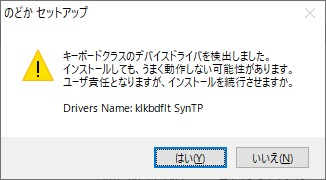
その場合には、FAQを、ご覧いただき、そのドライバを使用するソフトウェアのアンインストールをご検討 ください。キーボードLLフック機能をご利用になり、デバイスドライバをインストールされない場合には無視して頂いてかまいません。
また、以前からお使いで、インストールしたままとして、アンインストールしてPCを再起動していなかった場合にも、その旨を示すダイアログが表示されるので、PCを再起動してから、インストール作業を行ってください。
なお、オプションについては、以下のとおりです。- インストール先
実行ファイルなどがインストールされるフォルダです。デフォルトのままでよいでしょう。必要ならば参照ボタンを押して、変更可能です。
アンインストールせずに、上書きインストールされる場合、以前のインストール先が表示されます。x64環境で、4.09以前のバージョンを使用していた場合、 デフォルトのままだと、c:\Program Files (x86)になっています。
その場合、アンインストール、PCの再起動を実施した方が良いですが、c:\Program Files に変更されてもかまいません。その時には、c:\Program Files (x86)\nodoka フォルダとファイルは残ったままとなりますので、古い方は、エクスプローラから手動で削除してください。
- 環境変数NODOKA
設定ファイルの保存先をホームディレクトリと呼びます。そのホームディレクトリの中で一番最初に検索するフォルダ(ディレクトリ)が、環境変数NODOKAで指定された場所となります。参照ボタンにてフォルダを選択可能ですが、あらかじめフォルダが存在しないと選択できません。その場合には、Explorerにて 作成してから、再度、参照ボタンを押してください。なお環境変数を未設定のままでインストールした場合は、ホームディレクトリとしては次の順位のフォルダを探すので問題はありません。
もし、インストール時に設定されなかった場合で、あとから設定される場合には、Windowsのコントロールパネル/システム/システムの詳細設定から、システムのプロパティを開いて、詳細設定タブの最下部にある環境変数ボタンを押して、ユーザの環境変数の新規ボタンで、変数名「NODOKA」、変数値に、「のどか」の設定ファイルを置きたいフォルダを指定して設定してください。
- ショートカットを上書きしない
アップデイトインストール時に選択が有効となります。セットアップではアンインストールせずに、インストールを実行した場合、アップデイトインストールとなります。その際、すべてのファイルは上書きされますが、その中でデスクトップやスタートメニューに作られるショートカットを上書きしないオプションとなります。チェックすると、ショートカットは更新されないません。
- 設定ファイルを上書きしない
アップデイトインストール時に有効となります。チェックするとインストール先にコピーされるdot.nodokaや109.nodokaなどの設定ファイルが上書きされません。インストール先にあるセットアップオリジナルの設定ファイルを変更していた場合などの上書きを禁止することが可能です。なおバージョンアップに伴い改修などがあることもあるので、ご注意ください。なおセットアップオリジナルの設定ファイルは、本オプション指定によらず、インストール先フォルダのoriginalフォルダにコピーされます。
- All Users のスタートメニューに登録
すべてのユーザのスタートメニューに 、実行プログラムのショートカットが登録されます。Windows 8では、スタート画面に登録されます。
- 個人のスタートアップに登録
現在インストール作業を実行しているユーザのスタートアップに登録され、自動起動するように設定されます。
- 個人のデスクトップに登録
現在インストール作業を実行しているユーザのデスクトップ画面に 実行プログラムのショートカットが登録されます。
- GuiEdit起動高速化
GuiEdit は、C#言語で記述されているため、ngen.exeをセットアップの最後に起動して、ネイティブコードを生成します。生成には少し時間がかかります。このオプションを指定することで、設定ダイアログのGUI編集ボタンを押して起動するGuiEditの起動時間の短縮が可能です。
- デバイスドライバを使わない
のどかのデバイスドライバを使わない設定となるようインストールを実施します。以前にデバイスドライバを 使用していた場合には、チェックが自動的に外れます。
後述するキーボードLLフックのチェックが付いていない場合には、チェックされたときに、キーボードLLフックのチェックが付けられます。
- マウスLLフック
nodoka起動時の引数 -m をスタートメニューや、スタートアップに登録されたショートカットに設定します。
マウスフック機能を用いる場合には、チェックしてください。
- キーボードLLフック
nodoka起動時の引数 -k をスタートメニューや、スタートアップに登録されたショートカットに設定します。
デバイスドライバではなく、LLフック機能を用いる場合には、チェックしてください。
デバイスドライバをインストールしないをチェックした際に、こちらのキーボードLLフックがチェックされますが、不要ならチェックをはずしてください。
ScancodeMap変更もチェックした方が良いでしょう。
- キーボードLLフック時のWA
nodoka起動時の引数 -w をスタートメニューや、スタートアップに登録されたショートカットに設定します。
Windows 8での利用時に、キーボードLLフックを使う場合、Alt-TabとWin-Xを、キーカスタマイズ対象から外して、Windowsに送られるようにします。必要ならばチェックしてください。 オプションでは、Windows 8用ワークアラウンドと呼んでいます。高整合性(高IL)版オプションもご覧ください。
- 機能制限版
マクロ機能を排除した機能制限版の「のどか」をインストールします。スタートメニューあるいはスタートアップへの登録時に、作成されるショートカットは、機能制限版(nodoka64_limit.exe あるいは nodoka_limit.exe)となります。 下記の高整合性(高IL)版と排他選択となります。
- 高整合性(高IL)版
キーボードLLフック版を用いる場合、Windows 8において、Win-Xや、Alt-Tabなどが押しても機能しないことを対策するHIL版です。上記の機能制限版と排他選択となります。なお、管理者権限が必要となるので、スタートアップに登録にチェックして、スタートアップに登録されていても、Windows起動時に 「のどか」を起動できないという制限があります。 それを回避するには、デスクトップに登録されたアイコンを管理者権限で実行するか、スケジューラに登録するなどが必要となります。
- ScancodeMap変更
ScancodeMap変更機能を有効にするために起動オプションである -n をスタートメニューや、スタートアップに登録されたショートカットに設定します。
キーボードLLフック機能を使う場合には、チェックすると良いでしょう。
なお、本機能は管理者権限が必要なため、スタートアップでの自動実行では失敗します。デスクトップに登録されたアイコンを管理者権限で実行するか、スケジューラに登録するなどが必要となります。
- キーボードの種類
日本語キーボードの場合には、日本語109(106)キーボードを、また英語キーボードの場合には、英語104(101)キーボードを選択してください。
以前のインストールの際、異なる配列のままインストールして、アンインストールしていない場合、以前の設定を引き継ぐので、ここで正しく選択しても、設定ダイアログのデフォルトの設定は変更されません。以前とは異なる配列のキーボードを使うケースと同じなので、FAQをご覧いただき、修正されることをお勧めします。
アンインストールされて、インストールされた場合には、この問題は発生しません。
また、異なるキーボード配列のまま、Windowsが設定されている場合には、混乱が生じるので、FAQをご覧いただき、先に解決されることをお勧めします。
- インストール先
- インストールが終わったらPCを再起動してください。
- インストール時に、スタートアップに登録を設定して
おらず、ショートカットが作られていないならば、インストール先の
nodoka.exeあるいは、x64環境であれば、nodoka64.exeを実行することで動作開始します。 機能制限版の場合には、インストール先のnodoka_limit.exeか、nodoka64_limit.exeを実行すれば良いです 。またHIL版のバイナリ名は、nodoka_hil.exeか、nodoka64_hil.exeとなります。なお、 いずれも試用版の場合には起動後30分で自動終了します(4.29の試用版では30分ではなく、2015-12-27まで使用可能です)。
4.04以降では、nodoka.exe などを実行時に、引数を指定することで、通知領域のアイコンの色を指定することが可能となりました。
その他、起動時の引数については、こちらをご覧ください。 - もし、「窓使いの憂鬱」の設定ファイルをお使いの場合、正しく読み込まれていないことがあります。下記コラム「窓使いの憂鬱」から「のどか」への移行について を ご覧ください。
- インストールに異常が発生し、PC起動後キー入力が出来ない場合
-
キーボードLLフックで動作している場合を除いて、「のどか」デバイスドライバは 「のどか」の実行の有無に関わらずロードされます。このため、たとえ「のどか」を自動起動にしていなくても、ドライバの不具合によって「のどか」のアンインストールも含めた操作が不能になる場合があります。その場合でも下記の手順によって Windows の再インストールを回避することができる場合があります。
- マウスが使える場合には、Windows 10の設定から、マウスが使えない場合には、電源をオフオンしてサインイン画面から、Windowsをセーフモードで起動してください。(参考: Windows 10のセーフモードでPCを起動する)
- セーフモードで起動した状態でもキーボードが使えない場合には、ログイン画面でスクリーンキーボードを有効にして、パスワードを入力してログインしてください。
-
その後、コントロールパネルのプログラムから、のどかをアンインストールしてください。
アンインストールがうまく行かない場合には、こちらを参考にして、レジストリからのデバイスドライバの設定を削除してください。
- 「窓使いの憂鬱」から「のどか」への移行について
-
「窓使いの憂鬱」を お使いだった場合、「のどか」への移行については、設定ファイルに関して、変更が必要な箇所があるため、次の手順で移行を行ってください。
- 「窓使いの憂鬱」をアンインストールして、PCを再起動してください。
- 「のどか」をインストールし、PCを再起動してください。
- 「のどか」のデフォルト設定ファイル名は、「.mayu」ではなく「dot.nodoka」に変更されています。お使いだった 設定ファイルがある場合には、
ファイル名を変更するか、そのファイル .mayu を設定ダイアログで直接フルパス指定するようにしてください。
なお includeで読み込まれる設定ファイルは、 設定ダイアログで選択された設定ファイルをフルパス指定した場合、そのフォルダから検索され、続いて、環境変数 NODOKA, HOME, USERPROFILE, HOMEDRIVE\HOMEPATH で指定されたフォルダ、現在 実行している nodoka.exe が存在するフォルダの順に検索します。 - 設定ファイル内の記述で、window 指定で「窓使いの憂鬱」の mayu.exe を指定している場合、nodoka.exe に変更し、「のどか」のウィンドウを指定するようにしてください。
プラグイン(x64環境を除く) や104.mayu, 109.mayu, 104on109.mayu, 109on104.mayu の記述については、修正不要です。
- 「Windows 10へのインストール関係の情報」
-
1. Windowsのアップグレードインストール時の制限事項
のどかをインストールしたままで、Windowsを7や8.1からWindows 10にアップグレードした場合、次に示す制限事項があります。・設定ファイルである.nodokaファイルの関連付けが削除され、設定ダイアログでのファイル編集ボタンが機能しません。
修正するには、コントロールパネル/規定のプログラム/ファイルの種類またはプロトコルのプログラムへの関連付けにおいて、「.nodoka のどかファイルの現在の規定プログラム」を、プログラムの変更ボタンをクリックし、メモ帳などテキストファイル編集アプリに変更してください。
2. Windows 10上で、のどかを上書きインストールする場合の制限事項
Windows 10上で上書きインストールする場合、以下の制限事項があります。・ファイルコピーに失敗しインストールに失敗します。その場合には、Windows 10を再起動してから、のどかを再インストールし直してください。
・Windows 10上でのどかをアンインストールする場合、特に問題は見つかっていません。
・Windows 10上で「キーボードLLフック」を使用する場合、「キーボードLLフック時のWA」を選択する必要はありません。つまり引数の-k使用時の-wの設定は不要となります。
3. Windows 10上での、のどかの制限事項
他にもあるかも知れませんが、現在確認出来ているものとして以下が有ります。・Internet Explorer上で、IMEの変換中(-IC)が取れないことがあります。
・Internet Explorerを管理者権限で動作させた場合、ウィンドウ名が取れないことが有ります。その場合KeymapはGlobalとなります。
・OneNote、Windows Edgeでは、IMEの状態が一切取れていません。
・メモ帳を管理者権限で動作させた場合、IMEの状態が正しく取れません。
・たまにウィンドウの調査が機能しないことが有ります。
・&WindowClingToRight, &WindowHMaximize, &WindowVMaximizeにてウィンドウを操作した際、隙間が空きます。
-
「のどか」以外のキーボードカスタマイズソフトを利用している場合には、そのソフトのアンインストールを実行してください。
- ４. アンインストール uninstall
1) アンインストールを実行すると、「のどか」の設定情報は消去されます。ホームディレクトリ等におかれた設定ファイルは削除されませんが、c:\Program Files\Nodoka 以下にインストールされていたデフォルトの設定ファイルに直接編集されていた場合なども削除されるので、必要ならばバックアップをお勧めします。
2) 「のどか」を実行中の場合には、タスクトレイ（通知領域）上のアイコンを右クリックして、終了を選んで、終了させてください。
3) 次にコントロールパネルの「プログラムと機能」を用いて、「のどか」をアンインストールしてください。
4) アンインストール後、必ずPCを再起動してください。
・アンインストール後、nodoka.dllあるいはnodoka64.dllがインストール先フォルダに残る場合があります。その場合にはPC再起動後、手作業で削除してください。
・また 4.02以前を お使いだった場合、スタートアップやプログラムメニューに、それぞれ「のどか 」ショートカットが残る場合があるので、手作業で削除してください。
-
- 「のどか」のアンインストールが、うまく行かない場合。
-
なんらかの問題が発生し、「のどか」 のアンインストールがうまく行かなかった場合、PCを再起動する前に、少なくとも下記を実施されて、安全にPCが起動できるようにしてください。
なお、下記を実施することができずに、PC再起動させて、キーボードで操作できないといった不具合が発生した場合には、インストールに異常が発生し、PC起動後キー入力が出来ない場合をご覧ください。 なお Windows 7以降の場合には、一般にマウスは使用可能なので、ソフトウェアキーボードを用いることができます。- レジストリエディタ regedit.exe をコマンドプロンプトから実行してください。
- 次のレジストリエントリの中身を確認します。
HKEY_LOCAL_MACHINE\SYSTEM\CurrentControlSet\Control\Class\{4D36E96B-E325-11CE-BFC1-08002BE10318}
UpperFilters
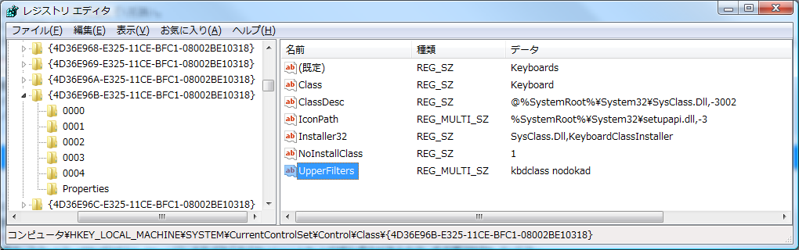
- ここに nodokad あるいは mayud の記述がある場合には、これを削除してください。なお kbdclass
の記述を削除しないよう、ご注意ください。
次回PC起動したときに、ここの記述にあるフィルタドライバを読み込もうとします。しかしながら、どれかのデバイスドライバの不具合がある場合や、デバイスドライバのファイル自身が、先のアンインストール作業で削除されてい て、レジストリには残っている場合、次回のPC起動時に、ブルースクリーンになったり、あるいはファイルが無い時には、キーボード、マウスが使えない状態になります。
「のどか」のデバイスドライバは、2008/8/2 にリリースした4.01以降、修正が必要な不具合には遭遇しておらず、変わっていません。ブルースクリーンになったという報告もいただいていませんので、他のデバイスドライバとの問題等が発生しない限り、問題は ほぼ無いと考えています。
また、「のどか」のSetupでは、Version 4.03 以降において、インストールあるいは、アンインストールに失敗した場合でも、このフィルタドライバのレジストリエントリを削除するようにしているので、上記のことが起きる可能性は低くなっています。しかしながら「窓使いの憂鬱」の Setup では考慮されておらず、たまにデバイスドライバを消して、レジストリエントリを残し不具合発生の原因となります。
「のどか」を実行すると、通知領域（タスクトレイ）に「のどか」のアイコンが表示されます。
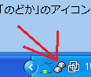 Windows XPの場合
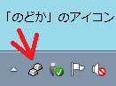 Windows 7や8の場合
もし、Windows 7や8を お使いで、通知領域(タスクバー)に表示されていない場合で、設定を変更したいときは、下記の順にクリックして、タスクバーに表示するアイコンと通知の選択を開いて、「のどか」の設定を「アイコンと通知を表示」に変更してください。
Windows 10の場合は、下に示す図とは異なりますが、タスクバーを右クリックして、「タスクバーの設定」をクリックし、「通知領域」、「タスク バーに表示するアイコンを選択します」にて、「のどか」の表示設定を変更可能です。
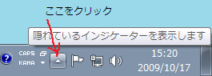
ボタンをクリック。
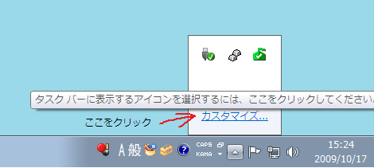
カスタマイズをクリック。
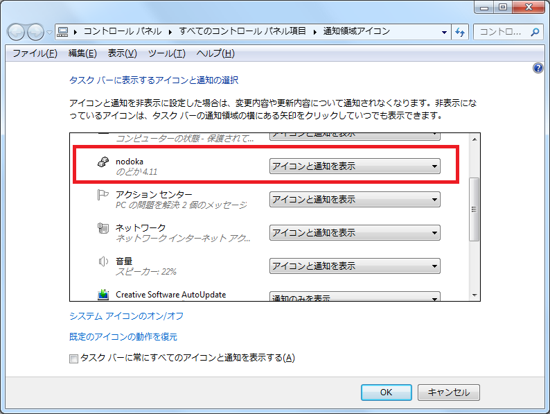
「アイコンと通知を表示」にして、OKボタンをクリックしてください。(上記では、のどか 4.11
と表示されていますが、お使いのバージョンによって数字は異なります。)
この「のどか」のアイコンを右クリックするとメニューが出てきます。
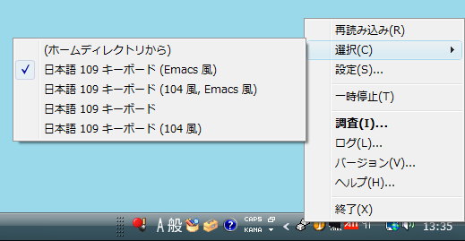
-
-
設定ファイルを再読み込みします。
&LoadSettingと同じです。
ログウィンドウや設定ウィンドウにも、「再読み込み(R)」を付けました。そちらからでも可能です。 -
サブメニューから設定ファイルの切り替えを行います。 デフォルトでは、上記のように(ホームディレクトリから)から、日本語109キーボード(104風)までの5個の設定があるので、選択のサブメニュー上で、所望のものの上にマウスポインタを持って行き、左クリックで、その設定が選択されます。
なお、デフォルトでは、日本語109キーボードあるいは、英語104キーボードが選択されているので、キーバインディングは Emacs風に なっていません。もしEmacs でのキーバインディング操作に慣れている場合には、Emacs風に変更してください。なお、「のどか」がデフォルトで用意しているサンプル設定は 8 つあります。以下の条件の組み合わせとなります。
- キーボードは日本語 109 キーボードか、英語104 キーボードか。
- キートップの表示の通りに使うのか、109 (または 104) キーボードを使っているが、104 (または 109) キーボードと同じ配置で使うのか。
- Emacs (UNIX で標準的なエディタの一つ) に似せたバインディングを使うかどうか。
このうち、a はインストール時に決定されるので、サブメニューに表示されるものは b, c の組み合わせ 4 種類になります。
デフォルト設定以外に独自の設定が必要な場合は、ホームディレクトリに
dot.nodokaファイルを作りそのファイルに設定を記述します。そしてサブメニューで (ホームディレクトリから) を選びます。詳しくはチュートリアルとカスタマイズを参照してください。 なお、現在使用されている設定ファイルは、下記、設定ウィンドウのファイル編集ボタンから、メモ帳で開いて編集することが可能です。 あるいはGUI編集ボタンを用いて、編集することも可能です。
- （「のどか」のアイコンを中ボタンでクリックしても表示されます。）
-
の選択肢となる設定ファイルを 指定するために、設定ウィンドウを開きます。
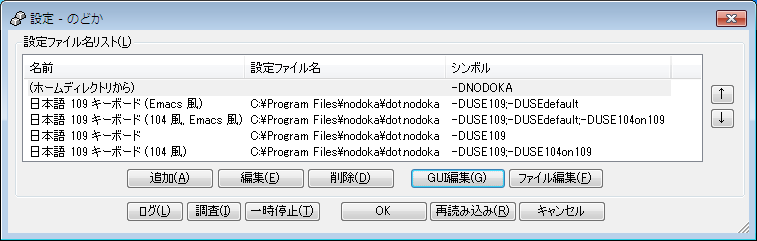
・ 右側の矢印ボタンでメニューに表示される順序を変更することができます。
・「再読み込み(R)」ボタンを押すと、現在フォーカスされている設定をロードし、キーバインディングを変更しますが、ウィンドウは閉じません。
・ 設定ウィンドウを「OK」ボタンで閉じると、現在フォーカスされている設定ファイルがロードされ、キーバインディングが変更され 、設定ウィンドウを閉じます。
・設定ウインドウの「ファイル編集(F)」ボタンを押すと、設定ファイル名リスト上で、現在フォーカスされた行で、指定されている設定ファイルを、メモ帳で開きます。
・設定ウインドウの「ログ(L)」「調査(I)」「一時停止(T)」ボタン は、メニューから選択したものと同じです。
・「GUI編集(G)」「ファイル編集(F)」については、後述します。
・「追加(A)」又は「編集(E)」ボタンを押すか、行をダブルクリックすると 、下記、編集ダイアログボックスが表示されます。
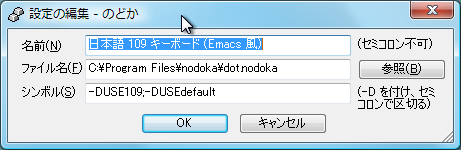
・「名前(N)」には、メニューに表示される名前を記述します。
・「ファイル名(F)」を空欄にするとホームディレクトリから
dot.nodokaを読み込みます。
例えば、test.nodoka のように、パスをつけずに、ファイル名単体で指定した場合、ホームディレクトリから 検索します。・あるいは、「参照(B)」ボタンを押して、ファイル を探して、指定することが可能です。
設定ファイルに使用可能なファイル形式は、 シフトJIS、ANSI(ASCII)、Unicode UTF-8 BOM有り(LE: Little Endian)、Unicode UTF-16 BOM有り(LE: Little Endian, BE: Big Endian どちらでもOK) です。Unicodeの場合、BOMを付けないと誤って異なる形式で読み込むことがあります。
英語環境などでは、 シフトJISのファイルは文字化けしたり、エラーとなったりするので、UTFを用いた方が良いでしょう。・「シンボル(S)」には、条件分岐で使用されるシンボルを記述します。シンボルの頭に
-Dをつけ、複数のシンボルは;（セミコロン）で区切ります。新規インストールした場合、(ホームディレクトリから)の設定には、-DNODOKAの記述が追加されます。また英語配列104キーボードを選択してインストールした場合には、-DUSE104が追記されます。
・「OK」ボタンを押すと、「追加(A)」で始めた場合には、設定ファイル名リストに新たな項目が追加されます。「編集(E)」で始めた場合には、変更結果が保存されます。
・設定ウィンドウにおいて、「ファイル編集(F)」あるいは「GUI編集(G)」ボタンを押したとき、(ホームディクトリから) の設定のところなど、設定ファイル名が 空欄で、指定されていない場合で、かつ、まだ設定ファイルが、ホームディレクトリに置かれていない場合、下記ダイアログが開き、デフォルトの設定ファイル
dot.nodokaを 、ホームディレクトリにコピーしてから、そのファイルを開くことが可能です。なおコピー先は、環境変数 NODOKA, HOME, USERPROFILE, HOMEDRIVE\HOMEPATH での指定を順に検索し、先に見つかったところにコピーします。Windowsデフォルトでは、NODOKAやHOMEは設定されていないので、USERPROFILE で指定されたフォルダとなります。
コピーを指示しなかった場合には、c:\Program Files\nodoka\dot.nodokaファイルを開きます。このファイルは、デフォルトのファイルであり、保存時にエラーとなり保存できません。またアップデイトインストールするたびに更新されるので、編集しないでください。また、設定ファイル名に、新たなファイル名を記述した場合、上記、環境変数が指すフォルダに、そのファイル名の設定ファイルが存在しない場合、新規ファイル作成と扱い、空の設定ファイルを開きます。
なお、Windows Vista や 7、8の場合、C:\Users\ユーザ名\AppData\Local\VirtualStore\Program Files\nodoka が存在すると、「ファイル編集(F)」ボタンを押すと、下記ダイアログが表示されます。この VirtualStore の nodoka のフォルダ内に、dot.nodokaなどの設定ファイルが存在しても、「のどか」では使用しないので、ファイルもフォルダも不要です。このC:\Users\ユーザ名\AppData\Local\VirtualStore\Program Files にある nodoka フォルダは、「はい」を押すと、そのフォルダが開くので、この機会に削除してください。もしも削除しないと、このダイアログが開くだけで、設定ファイルを開くことが出来ないので、ご注意ください。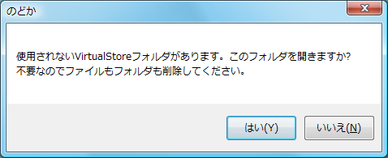
設定ウィンドウにおいて、「GUI編集(G)」ボタンを押すと、現在フォーカスされている設定ファイルを引数にして、 「のどかGuiEdit」 が起動します。
(Widnows 2000では対応していないので、ボタンは押せません。また環境によっては起動までに少し時間がかかります。
また、「GUI編集(G)」ボタンが、グレーになっていて押せない場合には、下記、Microsoft .Net Framework 4.0のランタイムのインストールが必要です。二つあるうち、下のLanguage Packは、エラーメッセージが英語のままで良いならば不要です。なおインストール時に、GuiEdit機能高速化を選択していないと考えられるので、ネイティブコード化されておらず、起動時には時間を要します。
dotNetFx40_Full_x86_x64.exe Microsoft .NET Framework 4 再頒布可能パッケージ
http://www.microsoft.com/downloads/details.aspx?displaylang=ja&FamilyID=0a391abd-25c1-4fc0-919f-b21f31ab88b7
dotNetFx40LP_Full_x86_x64ja.exe Microsoft .NET Framework 4 Language Pack
http://www.microsoft.com/downloads/details.aspx?familyid=7A4C6414-7F64-47A5-AE20-218403137957&displaylang=ja
下記が、「のどかGuiEdit」の表示画面例となります。詳細については、こちらのヘルプをご覧ください。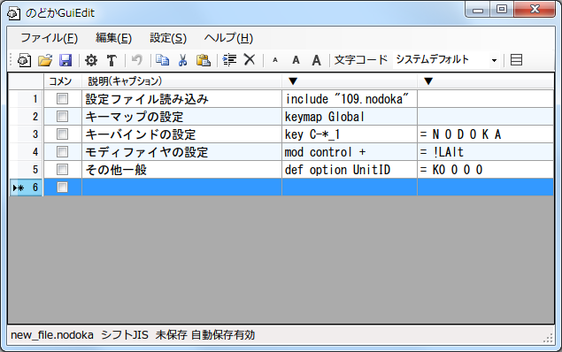
-
「のどか」の機能を一時的に停止します。キーボードからの入力は、「のどか」が存在しない時と同じ動作をします。このとき、タスクトレイのアイコンは になります。なお、起動時の引数や関数&IconColor で、アイコンの色を変更している場合は、それぞれの停止状態のアイコン表示となります。
設定ウインドウにも「一時停止(T)」ボタンがあります。 - （「のどか」のアイコンを左ボタンでダブルクリックしても表示されます。設定ウインドウにも「調査(I)」ボタンがあります。）
-
調査ウィンドウとログウィンドウを表示します。
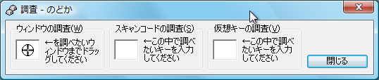
それぞれの場所でキーを押すことにより、ウィンドウの調査、キーのスキャンコード の調査、仮想キーの調査を実施し、ログウィンドウに結果を表示します。
ウィンドウの調査では、アイコンを調べたいウィンドウまでドラッグするとウィンドウクラスとウィンドウタイトルがログに出力されます。
ここで調査したウィンドウクラス名とウィンドウタイトルは、設定ファイルでwindowを記述できる個所に記載が可能です。(ここで調査する代わりに、FUNCTION&WindowIdentifyを利用しても調べることができます)スキャンコードの調査や、仮想キーの調査では、それぞれ、白い四角の箱を左クリックしてから、キーボードの任意のキーを押すと、そのキーのスキャンコードや、仮想キーコードがログウィンドウに表示されます。
それぞれ、「のどか」内部で認識しているウィンドウクラス、ウィンドウタイトル、およびキーコードが分かるので、設定ファイルでの記述の際、参考にしてください。
- （「のどか」のアイコンを左ボタンでクリックしても表示されます。）
-
ログウィンドウを表示します。
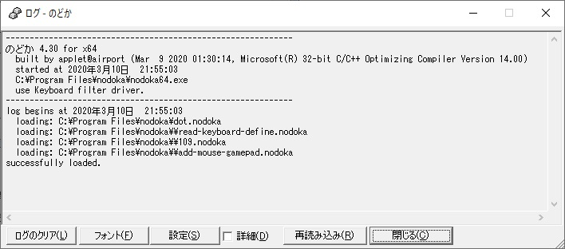
・調査(I)...の結果やエラーなどがここに表示されます。
・「ログのクリア(L)」ボタンを押すと、現在表示されているログを消去します。
・「フォントの変更(F)」ボタンを押すと、ログ表示に用いるフォントを変更し、再描画します。
・「設定(S)」ボタンを押すと、設定ウィンドウを表示します。
・「□詳細(D)」をチェックすると、「のどか」の内部の変換処理が詳細に表示されます。
・「再読み込み(R)」ボタンを押すと、現在選択されている設定ファイルを再読み込みします。
・「閉じる(C)」ボタンを押すと、ログウィンドウを閉じます。
・設定ウインドウにも「ログ(L)」ボタンがあります。
ログ表示の先頭で、「use Keyboard LL Hook」と「use Keyboard filter driver.」のいずれか、また「use Mouse LL Hook」が表示されることがあります。
それらは、のどか 起動時の引数によって、-k を指定したときには、「use Keyboard LL Hook」が表示され、デバイスドライバではなく、キーボードLLフックモードによる動作であることを示します。
逆に、通常は、-k指定は無いので、「use Keyboard filter driver.」が表示され、デバイスドライバによるキー入力フィルタ動作であることを示します。
また、起動時の引数に -m を指定したときには、「use Mouse LL Hook」が表示され、マウスフック機能が有効であることを示します。
また、ログ表示の先頭で、「Limit keyboard macro.」と表示されている場合には、キーボードマクロ機能を排除した機能制限版が動作しています。
もし、ログ表示の先頭で、「detect Remote Desktop」と表示されている場合には、リモートデスクトップ環境で動作していることを検出しています。その場合、起動時引数 -kを指定していなくても、「use Keyboard LL Hook」も表示され、キーボードLLフックモードで動作しています。
-
バージョン情報を表示します。(以下の図では、4.27表記ですが、4.30版では4.30表記されます。)
x64環境で、nodoka64.exeが起動されているときには、バージョン番号の後ろに、for x64 と表示されます。デバイスドライバのバージョン番号も表示されており、(nodokad: $Revision: 1.33 $) と通常表示されます。
もし、起動時引数に -k が指定されている場合には、デバイスドライバを使用せず、ローレベルキーボードフックを用いているため、デバイスドライバのバージョン番号ではなく、 (nodokad: Keyboard LL Hook Mode) が表示されます。
マウスフック機能が動作中かどうかは、このバージョンダイアログでは表示しませんので、ログウィンドウを御覧下さい。
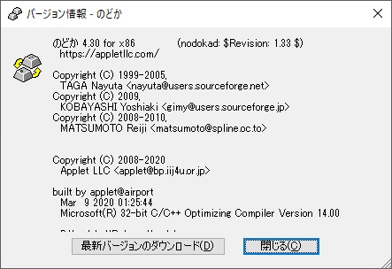 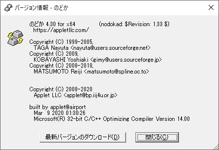
・「最新バージョンのダウンロード(D)」ボタンを押すと、規定のブラウザで、https://appletllc.com/ を開きます。
・「閉じる(C)」ボタンを押すと、バージョン情報ウィンドウを閉じます。
-
このヘルプマニュアルを、規定のブラウザで表示します。
英語環境では、Web上のオンラインヘルプを開き、Googleの翻訳エンジンに和文英訳させます。ただし正しい翻訳結果は期待できません。
この章では、「のどか」を初めて使うユーザーが、実際に設定を繰り返しながら、簡単なカスタマイズであれば問題なくできるレベルに到達することを目指します。まずはこの文章に沿って、実際にサンプルの設定を試してみてください。詳細が知りたい場合には、各章のリンク先で詳細を読むことができますので、疑問点があればリンク先を ご覧ください。
- i. 自分用の設定ファイルを作る
-
まず、通知領域（タスクトレイ）の「のどか」のアイコンから選択(C) ►のを、使用した場合に、使われる自分用の設定ファイル
dot.nodokaファイルを準備します。
それには、「のどか」のアイコンを右クリックして、設定を選んで、設定ウィンドウを開きます。続いて、(ホームディレクトリから)のところで、 「ファイル編集ボタン」を押すと、下記ダイアログが表示されます。ここで、「はい」を選ぶと、デフォルトの設定ファイルdot.nodokaファイルがホームディレクトリにコピーされます、次の設定ファイルの編集作業のために、メモ帳でコピーされたdot.nodokaファイルを開きます。
（もし、ここで「いいえ」を選ぶと、c:\Program Files\nodoka\dot.nodokaファイルを開きますので、ご注意ください。）
「ファイル編集ボタン」ではなく、「Gui編集ボタン」を押した場合には、このヘルプで以後説明するテキストエディタを使用した編集とは異なり、のどかGuiEditが起動するので、そちらのヘルプをご覧ください。
コピー先は、デフォルトでは、環境変数 NODOKA や HOME が指定されていないでしょうから、環境変数 USERPROFILE が指すフォルダとなります。もし、それが、どこなのか知りたい場合には、環境変数
USERPROFILEの設定値をコマンドプロンプトで表示し、ホームディレクトリの位置を 確認します。- 環境変数 USERPROFILE の設定値の確認方法
-
アクセサリ-コマンドプロンプトを実行して、コマンドプロンプトを開き、set USERPROFILE [Enter] を入力すると、現在指定されているフォルダが表示されます。なお、set[Enter] だけだと、全ての環境変数の設定値が表示されます。
USERPROFILE には、通常 具体的には、Windows 2000 や XP では、c:\Documents and Settings\ユーザ名。Vistaでは、c:\Users\ユーザ名 あるいはエクスプローラからたどるなら > c: > ユーザー > ユーザ名 となっています。
参照: ホームディレクトリ
- ii. コピーした設定ファイルに最小限の設定を書く
-
まず、
dot.nodokaファイルには、デフォルトで、 キーボード定義ファイルを読み込む read-keyboard-define.nodoka が includeされており、その先で、日本語キーボード(106/109キーボードなら 109.nodoka )か、英語キーボード(101/104キーボードなら 104.nodoka )を include 文で読み込む設定が記述されています。if ( USE109 ) 文によるシンボルによる分岐で、どちらかが設定されるようになっています。もしも、デフォルトのdot.nodokaファイル上で、include "read-keyboard-define.nodoka"をコメントアウトした場合、文末に、下記のように記述することになります。
- 109 日本語キーボードの場合
-
dot.nodokaファイルの先頭に以下のように記述します。 なお # 記号を書くと、そこからの記述はコメントとなります。include "109.nodoka" # 109 キーボード設定
好みに応じて、以下の各行を書くか書かないかを決めてください。
シンボル USE104on109, USEdefault に対応 し、それぞれ、英語配列にする、メモ帳のみ Emacs ライクにする設定となります。
include "104on109.nodoka" # 109 キーボードを 104 キーボード風に
include "default2.nodoka" # Emacs ライク メモ帳のみの設定なお、default2.nodoka ではなく、default.nodoka に変更すると、「窓使いの憂鬱」でのデフォルトと同等になり、いくつかのアプリでも、Emacs ライクになります。
include "default.nodoka" # Emacs ライク な様々な設定
default.nodoka, default2.nodoka で EmacsEdit指定されていないアプリケーションプログラムでは、Emacsライクなキーバインドにならないので、必要ならば、dot.nodoka に下記のようなwindow文の記述を追加してください。例えば秀丸エディタでは次のような記述となります。
window Hedemaru /HIDEMARU\.exe/ : EmacsEdit
- 104 英語キーボードの場合
-
dot.nodokaファイルの先頭に以下のように記述します。include "104.nodoka" # 104 キーボード設定
好みに応じて、以下の各行を書くか書かないかを決めてください。
シンボル USE109on104, USEdefault に対応し、それぞれ、日本語配列にする、 メモ帳のみ Emacs ライクにする設定となります。
include "109on104.nodoka" # 104 キーボードを 109 キーボード風に
include "default2.nodoka" # Emacs ライク メモ帳のみの設定なお、default2.nodoka ではなく、default.nodoka に変更すると、「窓使いの憂鬱」でのデフォルトと同等になり、いくつかのアプリでも、Emacs ライクになります。
include "default.nodoka" # Emacs ライク な様々な設定
ここまで書き込んだら、タスクトレイメニューで選択(C) ►からを選んでください。ログウィンドウにエラーメッセージが出ないようであれば、ここまではうまくいっています。( if文によるシンボルでの分岐を、そのまま お使いならば、設定ダイアログのリスト上の右端に、-DUSE109 などを忘れずに。)
これでカスタマイズの準備ができました。この先に自分好みの設定を書き加えていくことになります。そして書き加えたら再読み込み(R)します。ログウィンドウに「error: failed to load.」と出ていた場合、その 設定ファイルの読み込みに失敗しています。設定ファイルのパスと、行数、エラーメッセージが表示されているので、それを参考に修正してください。
参照:
contrib\nodoka-settings.txt以下、このヘルプファイルでは、細かな説明が続きますが、ここで、よく使われる設定ファイル例を提示しますので、ご参考にしてみてください。下記は109キーボード向けのものとなります。
下記設定ファイルは、contrib\sample.nodoka として、インストールされています。また デフォルトのdot.nodokaファイルからも参照しています。
また、その他の例としては、公式掲示板 設定ファイル集に集めています。
http://jbbs.livedoor.jp/bbs/subject.cgi/computer/41517/その他、12. リファレンス にも参考例を示しています。
#~~~~~~~~~~~~~~~~~~~~~~~~~~~~~~~~~~~~~~~~~~~~~~~~~~~~~~~~~~~~~~~~~~~~~~~~~~~~~~
include "109.nodoka" # 109 キーボード設定
# Global keymap 設定
keymap Global
# 以下は、便宜上、設定するもの
key C-A-D = &DescribeBindings # 現在のキーマップのログ出力
key F1 = &SendPostMessage("PostTray",,"のどか", 0x0205, 0, 0) # のどかのメニューを開く
# 以下に、ご自身の設定を御書き下さい。
# Escを半角/全角に
key *Esc = *半角/全角
# 半角/全角をEscに
key *半角/全角 = *Esc
# LeftControlをCapsLockに
mod control -= LeftControl
key *LeftControl = *英数
# CapsLockをControlに
def subst *英数 = *英数 # from http://d.hatena.ne.jp/kaosf/20101120
mod control += 英数
key *英数 = *LeftControl
# ダイアモンドカーソル
key C-*D = Right
key C-*S = Left
key C-*E = Up
key C-*X = Down
key C-S-*D = S-Right
key C-S-*S = S-Left
key C-S-*E = S-Up
key C-S-*X = S-Down
# Ctrl+Hをバックスペースに
key C-*H = BS
# Ctrl+GをDeleteに
key C-*G = Delete
# Ctrl+MをEnterに。C-S-M は S-Enterに。
key C-~S-*M = Enter
key C-S-*M = S-Enter
# 変換 でIMEオンして ひらがなモード、無変換 でIMEオフ
key ~IL-変換 = $ToggleIME &WaitKey(50) &SetImeConvStatus(0x0019) &WaitKey(0)
key IL-*IC-無変換 = $ToggleIME
# IMEオン中に、変換キーを押した場合には、ひらがなモードにするだけとする。
key IL-*IC-変換 = &SetImeConvStatus(0x0019) - iii. 普通のキーを入れ替えてみる
-
以下、説明の便宜上 109 キーボードを使っているものとして話をすすめます
まず、Esc キーと 半角/全角 キーを入れ替えてみます。これは、
dot.nodokaファイルの末尾に以下のように追加します。
なお、ここで説明を行う記述は、モディファイヤーキーを無視しない設定となります。モディファイヤキーの状態と無関係に置き換えてみるも参照してください。keymap Global
key Esc = 半角/全角
key 半角/全角 = Esc再読み込み(R)をして確認してみてください。
1 行目の
keymap Globalは、次のkeymap指定までの記述は全ての ウィンドウで有効な設定とする、という指示です。従って、最初に必ず書くことになります。2, 3 行目のように
key キー名 = キー名と書くことで、あるキーを押したときの挙動を変更できます。上の例であれば、Esc が押されたときは 半角/全角 が押されたように、半角/全角 が押されたときは Esc が押された動作になります。キー名を、キーボードの配列に準じて、図示したものを、Appendix vi キーボード配列定義として、別ページに記載しました。
また、キー名の調査を行うには、タスクトレイメニュー調査(I)...の「スキャンコードの調査」 のところの四角い白い箱をクリックしてから、調べたいキーを押すことで分かります。Esc キーと、半角/全角 キーを順に押したときのログ ウィンドウには、例えば以下のように表示されているはずです。
0x01 D-Esc
0x01 U-Esc
0x29 D-半角/全角
0x29 U-半角/全角キー名の前の
D-というのはキーが押された、U-半角/全角のU-というのはキーが離された、という状態をそれぞれ表します。また、直接 日本語キーボードであれば、
109.nodokaを、あるいは英語キーボードであれば104.nodokaでのキー定義( def key文の左辺値 )に、キー入れ替えで用いるキー名が記載されていますので、そちらも御参照ください。参照: キー割り当ての変更
マイクロソフト社のOSを含めた各種アプリケーションのショートカットキー定義も、必要であれば、あらかじめ御確認ください。「のどか」でキー入れ替えを行うと、デフォルトのショートカットキーを無効にすることになります。
- iv. 特定のウィンドウのみでキー割り当てを変更してみる
-
つぎに、Internet Explorer でのみ PageUp/PageDown キーで、Home/End の動きをさせてみます。
dot.nodokaの末尾に以下のように追加します。window InternetExplorer /iexplore\.exe/ : Global
key PageUp = Home
key PageDown = End1 行目の、
window キーマップ名 /ウィンドウクラス名/ : 親キーマップ名は、以降の指定は特定の ウィンドウについてのみ有効とする、という指示です。キーマップ名は分かりやすい適切な名前をつけます。親キーマップ名は Emacs ライクなキー操作にするには、emacsedit.nodokaで定義されているEmacsMoveやEmacsEditにすると、設定されますが、Emacsライクな設定にしたくない場合は、Globalに設定します。ここで注意することは、window行以降は、そのウィンドウへの指定となるので、他のウィンドウやGlobalな設定にしたい場合には、window行よりも前の行に記載する必要があります。
ウィンドウクラス名を調査するには、タスクトレイメニュー調査(I)...の「ウィンドウの調査」で、調べたいウィンドウやコントロールに をドラッグします。
Internet Explorer へドラッグすると (途中にさわった全てのウィンドウやコントロールの情報が出るので、他にもいろいろ出るはずですが)、次のような表示が出るはずです。
CLASS: C:\Program Files\Internet Explorer\iexplore.exe:IEFrame
TITLE: C:\Program Files\Internet Explorer\iexplore.exe:「のどか 」 - README - Windows Internet Explorer
Toplevel Window Position/Size: (-4, -4) / (1032x748)
Desktop Window Position/Size: (0, 0) / (1024x740)この
CLASSの部分から特徴的な文字列を抽出し、正規表現と呼ばれる記法で/文字列/のように書けば OK です。正規表現がよくわからない場合には、.exeは\.exe、ディレクトリを示す\は\\\\と書くことに注意すればとりあえずあまり問題はないでしょう。参照: ウィンドウクラス/タイトル名・正規表現
- v. キーがモディファイヤキーと共に押された場合に置き換えてみる
-
つぎに、Internet Explorer での動作をさらに変更して、Ctrl + PageUp/PageDown で、Home/End を押したように動かしてみます。前章で追加した内容を変更して以下のように書き換えます。(
C-がキー名の前に追加されました 。C-は、コントロールキーを指しています。)window InternetExplorer /iexplore\.exe/ : Global
key C-PageUp = Home
key C-PageDown = End2, 3 行目のキーの指定については、やはりスキャンコードの調査で調べます。Ctrl + PageDown を入力すると、次のように表示されます。
0x1d D-LeftControl
E0-0x51 D-C-PageDown
E0-0x51 U-C-PageDown
0x1d U-LeftControl1, 4 行目は Ctrl キーの押し/離しです。2, 3 行目から、
C-PageDownが書くべきキー名ということになります。ここのC-というのは、Ctrl が押されている、というキーの状態を表す記号です。Ctrl キー以外にも、Windows や Alt や Shift の状態、また CapsLock や NumLock などのキーがロック状態にあるかどうかもやはり同様です。これらの特別なキーを、「のどか」では、モディファイヤと呼んでいます。 キー割り当て変更は、このようにモディファイヤを含めて指定することができます。逆にいうと、前章までのキー割り当て変更では モディファイヤを何も指定していませんから、 CtrlやAltなどが押されていると キーイベントの置き換えを行いません。
Ctrl 以外のモディファイヤキーについては、下記を ご覧ください。参照: モディファイヤの指定
- vi. モディファイヤキーの状態と無関係に置き換えてみる
-
先の設定では、Ctrl + Alt + PageUp/PageDown と入力した場合、変換されずにそのまま入力されてしまいます。既に説明した通り、これは正しい動作です。(不正確な言い方ですが、モディファイヤが押されていると別のキー名になるので、前章の指定では置き換えが起きない、と理解してください)
Alt が押されているかどうかにかかわらず Ctrl + PageUp/PageDown を Home/End のように動作させるには、前章の設定を変更して以下のように修正します。
（説明の都合上、IEを例にしていますが、実際 IE7 では、ALTキーを押しながらは、うまく動きません。IE5,6 あたりでは動作したものと考えます。）window InternetExplorer /iexplore\.exe/ : Global
key *A-C-PageUp = *A-Home
key *A-C-PageDown = *A-Endこれは、Alt が押されているかどうかと無関係(Aの前のアスタリスク記号が、モディファイヤーの無視を示していいます。)に Ctrl + PageUp/PageDown を Home/End と置き換え、その際に Alt の状態は保存したままにする設定です。つまり、Alt が押されていなければ前章と同様の置き換えを行い、Alt が押されていれば Ctrl + Alt + PageUp を Alt + Home のように置き換えます。
これを押し進めると、あらゆるモディファイヤの状態に拘わらずに置き換えをして、かつあらゆるモディファイヤの状態を保存して置き換える、という設定が可能です。具体的には、PageUp/PageDown を Home/End と全く同様に使いたいという場合に、以下のような設定ができます。
window InternetExplorer /iexplore\.exe/ : Global
key *PageUp = *Home
key *PageDown = *End（説明の都合上、IEを例にしていますが、実際には、単独で、ALTキーを押しながらは、うまく動きません。IE7では、CTRL+ALT+PageUp/Downは、うまく動作します。）
このようにすれば、あらゆるモディファイヤの状態に関係なく、Internet Explorer での PageUp/PageDown が Home/End のように働きます。
- vii. モディファイヤになっているキーを置き換える
-
キー割り当ての変更の際に、モディファイヤキーを置き換えたり、モディファイヤキーに置き換える場合には、特別な設定が必要になります。
たとえば、無変換 キーを左 Alt キーとして使用するには、
keymap Global
mod alt += 無変換
key *無変換 = *LeftAltのようになります。3 行目は今まで通りの指定ですが、2 行目のように、
mod モディファイヤ名 += キー名という指定により、新たにモディファイヤとして無変換 キーを登録する必要があります。逆に、モディファイヤとなっているキーをモディファイヤではないキーに割り当てたい場合は、
mod モディファイヤ名 -= キー名により、モディファイヤ設定を削除する必要があります。たとえば、右 Windows キーで IME のオンオフをするには、
mod windows -= RightWindows
key RightWindows = $ToggleIMEのようにする必要があります。ちなみに、
$ToggleIMEというのは、109.nodokaまたは104.nodokaのキーシーケンス (keyseq文)で定義されており、109 キーボードならばA-半角/全角と定義されているので、Alt キー と 半角/全角キーが押されたことを示しています。参照: モディファイヤキー割り当ての変更
たとえば、109キーボードの場合、左コントロールキーと英数キーを入れ替える場合には、次のようになります。
mod control += 英数
key *英数 = *LeftControl
mod control -= LeftControl
key *LeftControl = *英数104キーボードの場合、英数ではなく、CapsLockキーなので、左コントロールキーとCapsLockキーを入れ替える場合には、次のようになります。
mod control += CapsLock
key *CapsLock = *LeftControl
mod control -= LeftControl
key *LeftControl = *CapsLock - viii. より高度な設定
-
ここまで読めばもうチュートリアルは卒業です。ここまでの内容が完璧なら、上級者を名乗れるほどのレベルまで来ています。一回で理解するのは難しいかもしれませんが、習うより慣れろで、調査 ウィンドウであれこれ試してみてください。自分好みの設定をあれこれ書き加えていくうちに、上にある各リンクの内容に目を通す必要が出てくるはずですが、そうしているうちにマニュアルの見方にも慣れてくるはずです。
さらなる機能としては、2 ストロークキーの設定、OneShot モディファイヤ と SandS、Stciky-Shift やWindow操作をはじめとした豊富な関数群、代用定義などがあります。これらは必要な場合のみ目を通せば十分です。
また、実例として、default.nodoka や default2.nodoka に目を通した り、インストールされるサンプルの設定ファイルを、ご覧になった方が良いでしょう。
また、その他のサンプルとして、appletkanにあるもの。sourceforgeにあるもの、hatenaの日誌(日本語キーボードと英語キーボードの併用)などにあります。
以前 AltIME を使用していた場合、これらの症状は AltIME が正しくアンインストールされていない時に出ます。
AltIME 2.27 の README によれば以下のようにするそうですので、そのようにしてください。
-
AltIME の設定で常駐させているなら一旦常駐のオプションをはずしてください。
スタートアップで起動しているときはスタートアップから削除してください。
サウンドを使用している場合は設定を外し、設定を完全に削除してください。
-
タスクトレイ上のアイコンを左クリックして AltIME のオプションダイアログを表示させ、アンインストールボタンを押してください。
-
いったん再起動後、
ALTIME*.*のファイルを削除してください。
【注意】Windows
2000ではアンインストールボタンを使用せずに
\winnt\system32\drivers\altime.sys
を削除すると Windows が起動できなくなることがあります。
AltIMEが原因によるものでない場合で、挙動がおかしくなったり、キーボード、マウスが操作不能になったりすることがあるかも知れません。その場合には、「のどか」の最新版を待つ必要があるかもしれません。
また、kbdaccなどのキーリピートを高速化するプログラムとの併用は、キーリピートが異常になることがあります。
なお、Windows起動処理中に、キーボード入力すると、キーボード、マウスが一切使用不要になる。IE7上で、IME切り替えができなくなるなどの事例も報告されています。
また、PGPi
や nProtect GameGuard との同時動作は出来ません。解決策案としては、バグの項に記載しました。ご覧ください。
regedit.exeを実行して、レジストリを開き、下記エントリを御確認ください。もし、kbdclass nodokad
以外の名前がある場合には、誤動作する可能性が高くなります。該当するソフトウェアをアンインストールするか、kbdclass nodokad
以外のフィルタドライバをUpperFiltersから取り除くなどの作業が必要となります。
なお、4.12以降では、インストール時に、このレジストリエントリを確認し、kbdclass nodokad
以外が存在する場合には、ダイアログが表示され、インストール作業は終了いたします。4.21以降では、ユーザー様責任でインストール続行が出来るようになりました。
HKEY_LOCAL_MACHINE\SYSTEM\CurrentControlSet\Control\Class\{4D36E96B-E325-11CE-BFC1-08002BE10318}
UpperFilters
AltIMEの場合には、このUpperFilters の値が、kbdclass altime
になっており、そこに、nodokad が追加され、不具合の原因となります。また猫まねきの場合には、nmkcore
が追加されており、同じく不具合の原因となります。
VMware Workstationの場合には、vmkbd
が追加されています。ある程度、共存して動作しますが、ときどきキーボードやマウスが固まると言った不具合が発生するので、vmkbd
エントリを削除して、PCを再起動すると安定することが試行錯誤した結果 分かりました。なお、その場合には VMware
Workstation側で、キーボードの操作に一部問題が発生するかもしれません。あるいは、vmkbdが存在しても、kbdclassの次に
nodokadがあれば大丈夫そうなので、4.29からsetup時にそうなるよう修正しています。
vmkbd は、VMware Workstation Version
6.0で確認しましたが、他のバージョンでは異なる名前のドライバのようです。
ユーザー様ご報告では、下記のフィルタドライバも存在するようです。いずれも同時動作はユーザー様責任となります。
SynTP (パナソニック Let's Note CF-AX2 タブレット/通常モード切替)
ikbevent (Smart Connect software Intel Keyboard Class Upper Filter Driver)
kaspersky (アンチウィルスソフトKaperskyが用いているフィルタドライバ)
C-x,
C-c,
C-v
などでコピー・ペーストできません。
あなたはおそらく
default.nodoka
を使っています。これを利用すると かなり色々な操作を Emacs 風にされてしまいますので、あなたの Windows
習得度が高かったり、Emacs 習得度が低かったりすると戸惑うことでしょう。contrib\nodoka-settings.txt
を参考に、自分好みにカスタマイズしてください。
ちなみに、Windows なんだし
C-z,
C-x,
C-c,
C-v
だけは使いたいという人のために、ZXCV
というシンボルが定義されています。-DZXCV
するなり
define ZXCV
すれば、それだけは Windows っぽく動きます。
IMEオンの状態では
IL-(IMEオン)
ですが、1文字入力した時点でさらに
IC-
（IME変換中）となります。一方で標準のデフォルトモディファイヤは
*IL-~IC-
です。思い通りにキー入れ替えされていないわけではなく、デフォルトモディファイヤの設定に従って入れ替えを行っていない
可能性が考えられます。
IME変換中のキーバインディングについては IME側の「プロパティ」-「全般」-「設定」でカスタマイズすることを想定しています。むやみにIME変換中のキーバインディングが変更されると、このIMEのカスタマイズがやりにくいのではないかと思います。
もし不便すぎて我慢できない、という場合には、
key *IC- =
のようにデフォルトモディファイヤを変更してもいいかもしれません。逆に不便なこともあるかと思いますので、お薦め
いたしません。
ほとんどのキーボードでは不可能です。
Fn
キーを単体で押しても Windows にキーイベントは来ないはずです
(スキャンコードの調査で調べられます)。当然ながら、このようなキーに機能を割り当てることはできません。
Lenovoあるいは、IBMのThinkpad では、Fnキーを離した瞬間に、D-WakeUp/U-WakeUpが取得可能ですが、押した瞬間には発生しないので、機能割り当て/変更不能です。
「のどか」の問題ではなく、御使用中のキーボードの問題である可能性があります。
キーボードによっては、特定の3キーの同時押しを認識できないものがあります。スキャンコードの調査で、どんなキーイベントが発生しているかをチェックしてみてください。モディファイヤ2個を押した状態で、3個目のキーを押したときにキーイベントが発生していないようであれば、そのキーボードでは使えないキーの組み合わせということです。
E0-0x2a
というキーイベントが出るようですが、これは何ですか？
不明です。このスキャンコードに関する情報をお待ちしております。
mod windows -= RightWindows #
... (1)
key RightWindows = $ToggleIME
右 Windows
キーはモディファイヤキーなので特別扱いされます。したがって普通のキーのように動作するようにするには、(1)
のようにしてモディファイヤキーとして動作しないようにします。これは
Alt や
Shift
や
Control
でも同様です。
タスクトレイの「のどか」のアイコンでマウスの右ボタンを押して調査(I)...を選びます。
&WindowIdentify
を使ってください。default.nodoka
や
default2.nodoka では
Ctrl +Shift
+
D
に割り振ってあります。
・Internet Explorer 7や8の保護モードに対応 していますが、一部のキー入力可能な部分で、操作できないウィンドウが存在します。
インストール時の選択により、以下の表の上 4 つまたは下 4
つが選ばれます。違いは、名前とシンボルのみなので、「設定」ダイアログボックスで適切に設定してください。(%NODOKA_DIR%
は nodoka をインストールしたディレクトリです)
また Q17も、ご参照ください。
| 名前 | 日本語 109 キーボード (Emacs 風) |
|---|---|
| 設定ファイル名 | %NODOKA_DIR%\dot.nodoka |
| シンボル | -DUSE109;-DUSEdefault |
| 名前 | 日本語 109 キーボード (104 風, Emacs 風) |
| 設定ファイル名 | %NODOKA_DIR%\dot.nodoka |
| シンボル | -DUSE109;-DUSEdefault;-DUSE104on109 |
| 名前 | 日本語 109 キーボード |
| 設定ファイル名 | %NODOKA_DIR%\dot.nodoka |
| シンボル | -DUSE109 |
| 名前 | 日本語 109 キーボード (104 風) |
| 設定ファイル名 | %NODOKA_DIR%\dot.nodoka |
| シンボル | -DUSE109;-DUSE104on109 |
| 名前 | 英語 104 キーボード (Emacs 風) |
| 設定ファイル名 | %NODOKA_DIR%\dot.nodoka |
| シンボル | -DUSE104;-DUSEdefault |
| 名前 | 英語 104 キーボード (109 風, Emacs 風) |
| 設定ファイル名 | %NODOKA_DIR%\dot.nodoka |
| シンボル | -DUSE104;-DUSEdefault;-DUSE109on104 |
| 名前 | 英語 104 キーボード |
| 設定ファイル名 | %NODOKA_DIR%\dot.nodoka |
| シンボル | -DUSE104 |
| 名前 | 英語 104 キーボード (109 風) |
| 設定ファイル名 | %NODOKA_DIR%\dot.nodoka |
| シンボル | -DUSE104;-DUSE109on104 |
Version.4.13以降において、YAMYと同様なマウスイベント置き換えに対応しました。
設定ファイルのシンボルの選択については、Q15をご覧ください。
利便性のために、シフト-F2キーで、日本語か英語キーボードに、トグルで切り替える設定を、Ver 4.03 以降の
dot.nodoka
に記述しました。# シフト+F2: 日本語キーボード、英語キーボード 切り替えトグル
if ( USE109 )
if ( USE104on109 )
key S-F2 => &IconColor(0) &HelpMessage("Reloaded", "日本語 109
キーボード") &LoadSetting("日本語 109 キーボード")
else
key S-F2 => &IconColor(2) &HelpMessage("Reloaded", "日本語 109
キーボード (104 風)") &LoadSetting("日本語 109 キーボード (104 風)")
endif
endif
if ( USE104 )
if ( USE109on104 )
key S-F2 => &IconColor(0) &HelpMessage("Reloaded", "英語 104
キーボード") &LoadSetting("英語 104 キーボード")
else
key S-F2 => &IconColor(2) &HelpMessage("Reloaded", "英語 104
キーボード (109 風)") &LoadSetting("英語 104 キーボード (109 風)")
endif
endif
日本語キーボードを お使いで、後から英語キーボードを追加した場合、
デバイスドライバを変更せずに、Windowsが認識しているキーボードドライバは、日本語キーボード配列のままとしてください。「のどか」インストール直後は、設定ファイルとして、「日本語109
キーボード」が選択されています。既に、トグルで切り替えるキーアサインは有効です。詳細は、dot.nodoka ファイルを ご覧ください。
Windows側の問題で、正しくキーボードドライバが設定されないことがあるので、キーボードドライバの配列の選択を、下記を参照して、正しく設定しなおしてください。
初心者でもわかる!「文字入力や変換ができない」をズバリ解決(Windows 7(8は7と同じ),Vista, XPの場合を解説)。 Windows 8の場合。Windows 7, Vista, XPの場合。Windows 2000の場合
PS/2接続の英語キーボードを、お使いで、USB接続のロジクールの日本語キーボードを後から追加する場合、ロジクールのSetPointユーティリティ&ドライバをインストールすると、Windowsの設定は、日本語キーボード配列に変更されます。
上記URLを参照して、PS/2側の設定は、英語配列に戻して、USE104を指定して、104.nodoka を使用するようにすれば、英語キーボードの方は、PS/2なので問題なくなります。しかし USBの設定の方は、英語配列を強要し、104.nodokaを使用しても、ロジクールのSetPointユーティリティ&ドライバにより、、ロジクールのキーボードの配列は、日本語のままとなります。
これを回避するには、SetPointユーティリティ&ドライバをインストールしないようにすれば、出来る可能性があります。なお日本語配列のまま使用される場合、SetPointを入れたままでも動作可能なように見えますが、標準のキーボードドライバではないため、本件はユーザ責任で実施されるようお願いいたします。
Version 4.14からは、複数のキーボードを接続しているときに、モディファイヤー K0-からK3-によって、入力されたキーボードの違いを認識できるようになりました。
従って、例えば日本語109キーボードが1番目で、英語104キーボードが2番目だとしたとき、あとから追加されたキーボードからの入力には、例えば key K1-S-*2 = Atmark と記述しておけば、Shift-2 をおしたときに、キー刻印と同じ @ が入力されるようになります。
なお本機能は、PCによっては、複数キーボードの違いが認識できずに、どちらのキーボードを叩いても、K0-のみあるいは、K1-のみなどになることがあります。
Version 4.20からは、モディファイヤー K0-からK7-までの7個のキーボード対応に拡張されました。なお認識できないあるいは抜き差ししたなど、設定ファイルロード時の異なる状態となった場合、キーボードはK0-となります。
Adobe Reader Version 8.0をインストールし、C:\Program Files\Adobe\Reader 8.0\Reader\SPPlugins\ADMPlugin.apl のコピーを取っておいて、8.1.xにアップデイトした後で、コピーしておいた ADMPlugin.aplファイルを、元の場所にコピーしてください。なお、Adobe Reader 7.x, 8.0, 9 では、本件は発生しません。
Adobe Reader Version 8.0の取得先
ftp://ftp.adobe.com/pub/adobe/reader/win/8.x/8.0/jpn/AdbeRdr80_ja_JP.exe
Acrobat 8.1.2 でも同様に、8.0の該当ファイルをコピーすれば、問題が解消した旨、ご報告頂きました。感謝致します。
「のどか」側での対策案を検討いたしましたが、DllMainでの共有メモリ設定を止めないと解消せず、共有メモリは複数ユーザで動的に取得しているために、修正困難であり、断念しました。
これを回避するには、読み込んでいる設定ファイルを、UTF-16 LE BOM有り などの UNICODEを用いた形式で保存してください。なお、UTFの場合には、必ずBOMを付けてください。誤って異なる形式で読み込むことがあります。
なおインストールされる 109.nodoka, 104on109.nodoka, default2.nodoka, default.nodoka は UNICODE形式になっており、また
104.nodoka, emacsedit.nodoka, dot.nodoka, 109on104.nodoka や contribフォルダの設定ファイルは、Shift-JIS形式のままとなっています。
初期のWindows Vistaには、Global Sign社のデジタル署名がプリインストールされていないために、発生することがあります。この場合には、Windows Update にて、証明書の更新を行ってください。
また、ドメインコントローラにログインを行う環境でも、同様なことが起きることが報告されています。その場合には、ドメインではなく、ローカル環境にログインしてください。なおドメインコントローラ側の証明書の更新でも解決する可能性がありますが、未確認です。
詳細は、６. チュートリアル tutorial のvii. モディファイヤになっているキーを置き換える や、８. カスタマイズ customize のiii. モディファイヤキー割り当ての変更 を ご覧ください。
固定キー機能の設定を見直してください。例えば、シフトキーを連打すると、設定ダイアログが表示されます。
def subst *英数 = S-*英数
回避するには、104on109.nodokaの該当行をコメントアウトするか、下記を dot.nodoka か、read-keyboard-define.nodokaに記述して、設定をキャンセルしてください。
def subst *英数 = *英数
キーボードLLフックを利用されていて、起動時引数に -n -k を付けて、シンボルに-DUSEFIXNLSと、-DUSE104on109を使用されている場合にも、同じ問題に遭遇します。read-keyboard-define.nodokaのdef subst *E0英数 = S-*英数 をコメントアウトするか、別途、def subst *E0英数 = *英数 を記述してください。
大変申し訳ありませんが、回避策は無いので、設定ダイアログにて、御使いであった設定ファイルを指定するよう修正してください。あらかじめWindows 8使用中に設定ダイアログでの設定情報をメモっておくことをお勧めします。
他人が使用する可能性のある PC へ「のどか」をインストールしては いけません。
「のどか」はデバイスドライバを使用してキーボードに入力されたキーを認識しますが、そのデバイスドライバは全てのユーザー
プログラムからアクセス可能なため、キー入力内容を取得するプログラムを作ることが可能です。
従って、ご自身の責任のもとで使用されるPC以外では、セキュリティの低下につながるため、インストールしないでください。
- [仕様] コマンドプロンプトではロックキーとIMEの状態を区別することができません。また、コマンドプロンプトのプロパティに対しては無力です。
- [仕様] PGPi を利用しているとうまく動きません。GnuPGを お使いください。
-
[仕様]
nProtect GameGuard とは同時動作できません。ただし同梱した nshell.exe
を用いて「のどか」を自動終了/自動起動させて使うことは可能です。お試しください。
nshell.exeの解説テキスト - [仕様] kbdclass nodokad以外のフィルタドライバがインストールされていると、キーボードやマウスが固まるといった不具合が発生しやすいです。FAQの項をごらん頂き、レジストリを御確認ください。 なお、setup 時に確認し、インストール作業を中断できます。
- [仕様] 起動時、あるいは終了時、または、設定ファイルを読み込んだ際、5秒程度、待たされることがあります。
- [仕様] リモートデスクトップ環境側では 起動時引数-k オプションによる Keyboard LL Hook モードをお使いください。ScancodeMap変更機能である 起動時引数-nオプションの利用も御検討ください。また、Windows側の問題で、VNCというソフトの内部では、Alt-Tabによるウィンドウの切り替えが出来ません。 なお、Alt-Tabを Alt-Pause に切り替える方法が紹介されています。http://flatray.com/memo/?date=20070206
- [仕様] 起動時引数-m 引数により Mouse LL Hookを有効にした場合、Windows Vista/7において、UACの確認ダイアログが押せないことがあります。
- [バグ] 設定ダイアログにて、ファイル編集ボタンを押したとき、あるいは設定の編集ダイアログで、参照ボタンを押したとき、異様に時間がかかることがあります。
- [バグ] モディファイヤーキー(シフトやコントロールキーなど)が押したままとなるという不具合が報告されています。マルチコアなプロセッサの場合、発生しやすいようです。ただし、ひとつの再現例が見つかり、モディファイヤーキーが押されたままとなる場合を検出する機能を備えました。4.17以降。 また、通常その場合には、シフトキーやコントロールキーを押せば治ることが多いです。
- [バグ] def option KeyboardDelay などによるキーリピート設定を実施している場合、リピートし続けることがあります。
- [バグ] 起動時に、通知領域にアイコンが登録されないことがあります。現在、充分な時間を与えていますが、環境によっては、Windows 起動時に、登録処理がタイムアウトしてしまうことによるものです。のどかを再起動させるか、PCを再起動してみてください。修正には、登録処理を別スレッド化することを考えています。
- [バグ] Internet Explorer 9以降を管理者権限で動作させた場合、そのウィンドウクラス名とタイトル名が取得できず、KeymapはGlobalとなります。
- [その他] USB キーボードデバイス接続後に英語101 キーボード配列にな ることがあるので、リンク先を参照して修復してください。なお、これはWindows側の不具合です。Windows 7, Vista, XPの場合。Windows 7, Vista, XPの場合(より初心者向け)。Windows 8の場合
- FAQやバグに出ていない情報は、Project nodoka4のチケットもご覧ください。
- Windows 10上での追加の制限事項は、「Windows 10へのインストール関係の情報」をご覧ください。
上記以外で、Windows XP 32bit上で、管理者権限ユーザでログインして、お使いの場合で、「窓使いの憂鬱」Version 3.30 では出来たけれども、「のどか」では出来なくなっていることがありましたら、随時、掲示板等で、ご連絡ください。「のどか」で、仕様変更した部位もありますが、それは改版履歴をごらん頂き、それ以外であれば、「のどか」リリース時の、Vista対応や64bit対応において、未確認の作りこんでしまったデグレードバグの可能性があります。その場合には、誠意を持って可能な限り対応いたします。
以下のソフトと同時には使わないようにしてください。サポートできません。それぞれサポートしているOSやキーボードの種類が異なったり、「のどか」と同時に使えるものや、使えないものもありますので、ご自身の
ご理解に応じて ご利用ください。
内容が古いです。2015年以前のもの。大変申し訳ありません。
- AutoHotkey
- スクリプトを書くことでキーボードなどにさまざまな動作を割り当てることができます。 XP対応。
- DvorakJ
- Dvorak 配列入門： 配列の説明と練習プログラムの紹介 および DvorakJ (XP, Vista, 7対応)の配布。AutoHotkey_Lで記述されており、ソース同梱。
- DvorakJP
- 日本語入力用拡張Dvorak配列。IMEやATOK向けの設定ファイル。Dvoraker(シェアウエア)の紹介。BSD,Linux向け VJE-Delta,Canna用の設定ファイルなど。
- 猫まねき
- 「窓使いの憂鬱」の方がカスタマイズの自由度は高いのですが、猫まねきには GUI がついていて初心者にもやさしいかもしれません。 「窓使いの憂鬱」にない機能も存在します。フリーウェア。 XP対応。USBキーボード非対応。
- RemapKey （Windows Server 2003 Resource Kit Tools: Remapkey.exe）
- キーボードのキーを別のキーへ入れ替えることができるソフトです。RemapKey ではログイン画面でのキーを変更することができます。
- MetaX
- コンセプト的に「窓使いの憂鬱」「cmkey」と非常によく似ていますが、より Emacs 的な設定ファイルを書き、ミニバッファを利用した補完などが可能です。 XP対応
- Xkeymacs, Xkeymacs 3.48改
- Windows 上の全てのアプリケーションにおいて Emacs like な操作性を実現するためのキーボードユーティリィティです。Emacs like な操作性にしたいが、 設定ファイルを書くのは面倒という人にお勧めです。 XP,Vista対応
- Keyhac
- Pythonスクリプトで記述するキーカスタマイズソフト。XP,Vista対応
- ZeniSynth
- 「窓使いの憂鬱」や「AutoHotKey」のようなキーカスタマイザ。luaスクリプトで記述。XP,Vista対応
- 私家版 窓使いの憂鬱 Linux & Mac (Darwin) 対応版
- 「窓使いの憂鬱」を Linux と Mac で使えるようにしたもの。Linux Kernel 2.6以上, Mac OS 10.4, 10.5, Darwin 8.0
- YAMY Yet Another Mado tsukai no Yuutsu
- 「窓使いの憂鬱」のキー入力置換をドライバベースからユーザモードフックベースに変更した派生プロジェクト。
ユーザモードのため、署名が不要であり、Vista x64版上では、64bit版と32bit版のアプリ両方をサポートするようです。 - 天狼Sirius
- JavaScriptで記述可能なキーアサインツール。TSFサポートあり。(のどかでもDLLを利用させて頂いている)
-
AltIME /AppleK
/
AppleKbWin /
CraftKeytrans
/
Ctrl2Cap /
dvorak kr, swap2k /
Easy Punch
/ enthumble /
IME Start /
Key Bat /
Keylay21
/ Keymacs / Keymacs+(dead link) / KeySwap / Max Min Keyboard / Microsoft Keyboard Layout Creator / ねこぽい / 秀CAPS / 姫踊子草 - キーボードによる操作を改善しようとさまざまなソフトが開発されています。
気になる文章へのリンク。 下記は、いずれもオリジナルの「窓使いの憂鬱」に言及されたものです。「のどか」に関するもので、ここに載せたい場合には、ご連絡ください。
- 繭使いの憂鬱
- 「窓使いの憂鬱」のチュートリアルにおける 分かりにくい個所などを 分かり易く解説してあります。
- Giraffe+ software index
FUNCTION&PlugInに利用できるプラグインが配布されています。そもそもプラグインの機能は Giraffe+ さんにより実装されました。- 公開されているプラグインのうち、Giraffe+が常駐してる環境でGiraffeスクリプトを実行する「Giraffe」の「のどか」対応版は、こちらで 配布しています。
- mayu-plugins -- 窓使いの憂鬱用プラグイン
- window-select, migemo-isearch, ie-migemo-search といったプラグインが配布されています。このうち、ウィンドウの選択を行えるようにする window-selectに関しては、「のどか」対応版を、こちらで配布しています。
- 窓使いの憂鬱用プラグイン
- 検索プラグイン searchit が配布されています。「のどか」対応版 では、少し機能アップして、こちらで配布しています。
- 雑記帖
- mayu-mode.el が配布されています。 「のどか」では nodoka-mode.elに改名しています。
- Commutative Field in GeoCities
- tron配列設定ファイルなどがあります。
- 「窓使いの憂鬱」を使って T-Code 入力してみる
- T-Code 用設定ファイルなどが配布されています。
- いろいろな仮名入力方法 (dead link)
- いろいろな仮名入力方法の「窓使いの憂鬱」用設定ファイルがあります。
- Vector: 新着ソフトレビュー
- Vector の 新着ソフトレビューで 「窓使いの憂鬱」が紹介されたもの (2005/4/27)
- 窓の杜: NEWS
- 窓の杜の NEWS で 「のどか」が紹介されたもの (2008/8/4)
- 「繭(まゆ)」Version 4.00.0、「のどか」Version 4.01〜4.09
-
Copyright (C) 2008,2009 applet <applet@bp.iij4u.or.jp> All rights reserved.
ライセンスは、CPL(Common Public License)です。詳細は Common_Public_License_1_0.txt を、ご覧ください。Common_Public_License_1_0_JP.txt は、日本語参考訳です。 - 「のどか」Version 4.10以降 (使用許諾条項も含む)
-
Copyright (C) 2009〜2015 applet <applet@bp.iij4u.or.jp> All rights reserved.
・ライセンスは、CPL(Common Public License)です。詳細は Common_Public_License_1_0.txt を、ご覧ください。Common_Public_License_1_0_JP.txt は、日本語参考訳です。
・当面の間、シェアウェア費用を払って頂いた方には、無償アップデイトを実施いたします。しかしながら、コードサイニング署名は、有料のもののため、次のWindowsに対応する際には、有償アップデイト(期間限定1か月程度、予価1000円)を予定しています。あしからず御理解頂きたいと考えます。
2012/12 4.21にアップデイトする際、及び2015年のWindows 10対応時にアップデイト版の案内をいたしました。
・1本のライセンスで、同じ世帯であれば、複数台のPCに入れて使用可能です。同じ人が、御自宅と会社で使うのもOKです。ただし御友人、離れた家族、会社の同僚などへの貸与、提供は困りますので、別途、ご購入ください。
・ソフトウェアおよびドキュメントの不具合解消に努めていますが、なんらかの誤り、不具合、事故が発生した場合、その責任は、使用者にあります。御理解頂けない場合には、ただちに御利用を、おやめ下さい。なお、対応できないダメなケースもあるでしょうが、バグ報告頂いた場合には、今まで通り、誠意を持って可能な限り対応いたします。
窓使いの憂鬱 Version 3.30以前-
Copyright (C) 1999-2005, TAGA Nayuta <nayuta@users.sourceforge.net>
All rights reserved.Redistribution and use in source and binary forms, with or without modification, are permitted provided that the following conditions are met:
- Redistributions of source code must retain the above copyright notice, this list of conditions and the following disclaimer.
- Redistributions in binary form must reproduce the above copyright notice, this list of conditions and the following disclaimer in the documentation and/or other materials provided with the distribution.
- The name of the author may not be used to endorse or promote products derived from this software without specific prior written permission.
THIS SOFTWARE IS PROVIDED BY THE AUTHOR ``AS IS'' AND ANY EXPRESS OR IMPLIED WARRANTIES, INCLUDING, BUT NOT LIMITED TO, THE IMPLIED WARRANTIES OF MERCHANTABILITY AND FITNESS FOR A PARTICULAR PURPOSE ARE DISCLAIMED. IN NO EVENT SHALL THE AUTHOR BE LIABLE FOR ANY DIRECT, INDIRECT, INCIDENTAL, SPECIAL, EXEMPLARY, OR CONSEQUENTIAL DAMAGES (INCLUDING, BUT NOT LIMITED TO, PROCUREMENT OF SUBSTITUTE GOODS OR SERVICES; LOSS OF USE, DATA, OR PROFITS; OR BUSINESS INTERRUPTION) HOWEVER CAUSED AND ON ANY THEORY OF LIABILITY, WHETHER IN CONTRACT, STRICT LIABILITY, OR TORT (INCLUDING NEGLIGENCE OR OTHERWISE) ARISING IN ANY WAY OUT OF THE USE OF THIS SOFTWARE, EVEN IF ADVISED OF THE POSSIBILITY OF SUCH DAMAGE.
Yet Another Mado tsukai no Yuutsu(YAMY)-
Copyright (C) 2009, KOBAYASHI Yoshiaki <gimy@users.sourceforge.jp>
All rights reserved.
Redistribution and use in source and binary forms,
with or without modification, are permitted provided
that the following conditions are met:
1. Redistributions of source code must retain the above copyright
notice, this list of conditions and the following disclaimer.
2. Redistributions in binary form must reproduce the above
copyright notice, this list of conditions and the following
disclaimer in the documentation and/or other materials provided
with the distribution.
3. The name of the author may not be used to endorse or promote
products derived from this software without specific prior
written permission.
THIS SOFTWARE IS PROVIDED BY THE AUTHOR ``AS IS'' AND ANY EXPRESS
OR IMPLIED WARRANTIES, INCLUDING, BUT NOT LIMITED TO, THE IMPLIED
WARRANTIES OF MERCHANTABILITY AND FITNESS FOR A PARTICULAR PURPOSE
ARE DISCLAIMED. IN NO EVENT SHALL THE AUTHOR BE LIABLE FOR ANY DIRECT,
INDIRECT, INCIDENTAL, SPECIAL, EXEMPLARY, OR CONSEQUENTIAL DAMAGES
(INCLUDING, BUT NOT LIMITED TO, PROCUREMENT OF SUBSTITUTE GOODS OR
SERVICES; LOSS OF USE, DATA, OR PROFITS; OR BUSINESS INTERRUPTION)
HOWEVER CAUSED AND ON ANY THEORY OF LIABILITY, WHETHER IN CONTRACT,
STRICT LIABILITY, OR TORT (INCLUDING NEGLIGENCE OR OTHERWISE) ARISING
IN ANY WAY OUT OF THE USE OF THIS SOFTWARE, EVEN IF ADVISED OF
THE POSSIBILITY OF SUCH DAMAGE.
-
Boost.Regex, Boost.Program_options -
Boost.Regex
Copyright (c) 1998-2007 John MaddockBoost.Program_options
Copyright (c) 2002-2004 Vladimir Prus
Boost Software License - Version 1.0 - August 17th, 2003
-
Permission is hereby granted, free of charge, to any person or organization
-
obtaining a copy of the software and accompanying documentation covered by
-
this license (the "Software") to use, reproduce, display, distribute,
-
execute, and transmit the Software, and to prepare derivative works of the
-
Software, and to permit third-parties to whom the Software is furnished to
-
do so, all subject to the following:
-
The copyright notices in the Software and this entire statement, including
-
the above license grant, this restriction and the following disclaimer,
-
must be included in all copies of the Software, in whole or in part, and
-
all derivative works of the Software, unless such copies or derivative
-
works are solely in the form of machine-executable object code generated by
-
a source language processor.
-
THE SOFTWARE IS PROVIDED "AS IS", WITHOUT WARRANTY OF ANY KIND, EXPRESS OR
IMPLIED, INCLUDING BUT NOT LIMITED TO THE WARRANTIES OF MERCHANTABILITY,
FITNESS FOR A PARTICULAR PURPOSE, TITLE AND NON-INFRINGEMENT. IN NO EVENT
SHALL THE COPYRIGHT HOLDERS OR ANYONE DISTRIBUTING THE SOFTWARE BE LIABLE
FOR ANY DAMAGES OR OTHER LIABILITY, WHETHER IN CONTRACT, TORT OR OTHERWISE,
ARISING FROM, OUT OF OR IN CONNECTION WITH THE SOFTWARE OR THE USE OR OTHER
DEALINGS IN THE SOFTWARE.
-
- 天狼 sirius http://www.sirius.spline.tv/wiki/WikiStart
-
The MIT License
Copyright (C) 2008-2010, MATSUMOTO Reiji <matsumoto@spline.oc.to>
Permission is hereby granted, free of charge, to any person obtaining a copy
of this software and associated documentation files (the "Software"), to deal
in the Software without restriction, including without limitation the rights
to use, copy, modify, merge, publish, distribute, sublicense, and/or sell
copies of the Software, and to permit persons to whom the Software is
furnished to do so, subject to the following conditions:
The above copyright notice and this permission notice shall be included in
all copies or substantial portions of the Software.
THE SOFTWARE IS PROVIDED "AS IS", WITHOUT WARRANTY OF ANY KIND, EXPRESS OR
IMPLIED, INCLUDING BUT NOT LIMITED TO THE WARRANTIES OF MERCHANTABILITY,
FITNESS FOR A PARTICULAR PURPOSE AND NONINFRINGEMENT. IN NO EVENT SHALL THE
AUTHORS OR COPYRIGHT HOLDERS BE LIABLE FOR ANY CLAIM, DAMAGES OR OTHER
LIABILITY, WHETHER IN AN ACTION OF CONTRACT, TORT OR OTHERWISE, ARISING FROM,
OUT OF OR IN CONNECTION WITH THE SOFTWARE OR THE USE OR OTHER DEALINGS IN
THE SOFTWARE.
- 「のどか」ホームページ
-
https://appletllc.com/ 「窓使いの憂鬱」の派生版であるため、オリジナルの http://sourceforge.net/projects/mayu/ とは異なります。決してオリジナルの方に、お問い合わせすることが無いよう よろしくお願いいたします。
掲示板にて、ユーザサポートを実施しています。
掲示板では、ご質問に対するサポートや、リリース案内、ネットから見つけてきた設定ファイル集へのリンク紹介などを実施しております。正式版購入者には、最新版のリリースなどの御案内を メールで 差し上げています。なお、Vector のシェアレジでご購入された場合、最新版リリースの連絡先が不明なので、メールアドレスを御連絡ください。
掲示板以外にも、applet@bp.iij4u.or.jp に直接メールをお出しいただいても構いません。なおGmailなどでは迷惑メールとなる場合がありますのでご注意ください。
ソースコードは、Common Public License で http://sourceforge.jp/projects/nodoka4/ にて公開しています。
- 「窓使いの憂鬱」2ch スレ
-
2ch のスレ 窓使いの憂鬱 7 , 窓使いの憂鬱 8 , 窓使いの憂鬱 9 (のどか,yamy) 9 では、ユーザ間の情報交換がなされています。派生版である「のどか」にも関係ある情報があるかも知れないので、作者も時々見ています。
初めに、偉大かつ手放すことができない「窓使いの憂鬱」をリリースされ、長年に渡り、開発サポートを続けられた
TAGA Nayuta
さん。大変ありがとうございます。
ご本人には直接、派生版を出す話を大変失礼ながら、メールでさせていただきました。特に反対されるわけでなく、好意的にBlogでも御案内頂き、重ねて
どうもありがとうございます。
4.00.0 の致命的なバグである
すべてのウィンドウのCLASS/TITLE名が、正しく認識できない問題を発見してくださった、2chでのスレッドの方々、大変ありがとうございます。
また「繭(まゆ)」という名称だと、区別が付かない。それに伴い「窓使いの憂鬱」作者への問い合わせなどの御迷惑をかける危険性や、後継/派生の別、シェアウェアの是非、ソースコード公開の是非、署名付きドライバの御要求、ドキュメントの不備など、御議論、御指摘、痛み入ります。また、設定ファイルのデフォルト名を変更した結果、
窓使いの憂鬱の設定ファイルが、そのままでは読み込まれず、うまく動かなかったので、大変申し訳ありませんでした。
上記に対して、配慮が足りない箇所がたくさんあったと反省しております。以下は決して御満足頂ける回答ではないと思いますが、下記のように進めています。
・お約束はできませんが、署名付きドライバに関しては、いずれ取得したいと考えています。現在、個人では取得することができず、やむなく署名無しで公開しました。しかしシェアウェアとしたことで、その実現可能性を高めた形で進めさせてください。
予定では概要にも書いたように、2009/9頃を想定しています。
（本件は、2009/10に、署名有り版として4.10をリリースし、対応致しました。)
・ソースコードは、Common Public License で
http://sourceforge.jp/projects/nodoka4/
にて公開しています。
・Vista向けの 3.30.1ソースを作成され、2chでのスレッドで公開してくださった無名の方、大変ありがとうございます。
・YAMYのKOBAYASHI Yoshiaki さん。&CancelPrefix
を、実装させて頂きました。下記にもあるように、もともとドライバの開発をされていたとのことなので、そちらの方も、大変ありがとうございます。
・「のどか」をダウンロードして、動かしてみた方々、大変ありがとうございます。また、シェアウェアに御賛同頂き、正式版を御購入いただいた方々、大変どうもありがとうございます。
以下は、Version 3.30まで公開された「窓使いの憂鬱」作者であるTAGA Nayuta 氏からの謝辞となります。
Windows9x/XP 用のドライバを作成してくださった小林義明さん、ありがとうございます。
最も身近なユーザーであり、数多くの助言をしてくれた塙与志夫さんに感謝します。何より彼の粘り強い要求は怠惰な作者に新規リリースへの活力を与えてくれました。
河部修和さん、KANAI Makoto さん、HAJANO Naòqui さんには設定ファイルを提供していただきました。お礼を申し上げます。
Hosaka Yuji さんには、マルチモニタ対応パッチをいただきました。ありがとうございます。
「窓使いの憂鬱」はたくさんの人の貢献の上に成り立っています。ここに名前を挙げていない方にも心から感謝します。
2020/03/10 4.30
- 仕様変更
- サポートOSをWindows 10のみとしました。
しかしながら、依然として制限事項は残っているので、「Windows 10へのインストール関係の情報」をご覧ください。 - デバイスドライバの署名を、Windows 10向けの構成証明署名のものに変更しました。
セキュアブートを有効にしたPCでも利用可能となります。 - 利用する必然性が少ない緊急用デバイスドライバを取り除きました。
- デバイスドライバのインストールは、セットアップから分離しました。
そのため、アプリのインストールより先に実施する必要があります。 -
セットアップにおいて、デバイスドライバの存在を確認した場合、「デバイスドライバを使わない」のチェックを外すようにしました。
4.29のセットアップとはチェックの付け方や意味が異なります。
- サポートOSをWindows 10のみとしました。
- 修正
- キー入力のログのうち、拡張キーであるE0E1-が必ず表示される4.29でのデグレードバグがあり直しました。
- ゲームパッドサポートの設定ファイルにおいて入力ループのWait[ms]の値が5msや10msの値になっていたものを、50msになるよう修正しました。
2015/09/17 4.29
- Windows 10対応
- Windows 10対応を記念して、4.29評価版では30分しか使えない制限を廃止しています。ただし2015-12-27までの使用期限があります。
- 実行ファイルのminifestにて、Windows 7からWindows 10までの互換フラグを設定しました。
-
インストール時に過去にインストール済であれば、「デバイスドライバをインストールしない」にチェックを付けるようにしました。
Windows 10では上書きインストールの際、デバイスドライバファイルの上書きに失敗するためです。 - Windows 10へのインストール関係の情報やのどかの制限事項は、「Windows 10へのインストール関係の情報」にまとめましたので忘れずにご覧ください。
- その他
-
インストール時にkbdclassのドライバが既に存在する場合、nodokadドライバが、kbdclassの次に来るよう変更しました。
VMwareなどのドライバと併用するとキー入力時にWindowsがフリーズすることを防ぐ対処策です。 -
キー入力のログのうち、拡張キーであるE0E1-が付いてる場合、以前は空白を表示していましたが、E0E1-を表示するようにしました。
-
インストール時にkbdclassのドライバが既に存在する場合、nodokadドライバが、kbdclassの次に来るよう変更しました。
- 内部的な修正
- 権限が異なるアプリとのウィンドウメッセージやりとりのために、フィルタ登録関数ChangeWindowMessageFilter()とChangeWindowMessageFilterEx()を使い分けるようにしました。(Windows 7以降では該当関数が機能しないためですが、有効にならないWindows 10上のアプリが存在します)
- フックDLLに他のプロセスからアタッチされた際、ChangeWindowMessageFilterEx()を呼んでいるが、タスクトレイ上ののどかのウィンドウハンドルが取れないことがあるため、DLLのフックをウィンドウハンドルが取れるまで待たせるようにしました。
- タスクトレイのアイコン表示前にDLLのフックを実行していたが、順番を入れ替えました。
しかしながら上記を実施しても、IMEの状態が取れないアプリが存在し、またまれにウィンドウの調査が出来ない状態になることが有ります。 -
engine.cpp内で、nodokadデバイスドライバを起動時に余計にオープンしていたが、1回だけオープンに修正しました。
しかしながら、Windows 10でデバイスドライバの上書きコピーに失敗する対策にはなっていません。
2015/07/28 4.28
- 修正
- 高整合性レベル実現方法を4.26相当に戻して nodoka64_hil.exe, nodoka_hil.exeの復活
チケット#34606
4.27では内部的に通常の実行ファイルにてHILを実現させましたが同時に -k引数を用いて、デバイスドライバを使わないキーボードLLフックモードでは、Windows 8/8.1やWindows 10上では、肝心のWin-X, Alt-Tabが機能しませんでした。
4.28では復活させたため、インストール時の選択した際に、hil版がインストールされます。
hil版では必ず管理者権限での起動が必要となります。またキーボードLLフックモードでも一部のキー入れ替え対応(引数-n)のために、管理者権限での起動が必要となるのは従来と同じです。詳細は(引数-k)の項や、オプション キーボードLLフック機能(-k)機能をご覧ください。
- def option SendTextDelayの改修
チケット#34613
&SendTextでの遅延時間設定用のオプションですが、4.27では機能していませんでしたが改修しました。
- 高整合性レベル実現方法を4.26相当に戻して nodoka64_hil.exe, nodoka_hil.exeの復活
チケット#34606
- その他
- Windows 10対応アップグレードのお知らせ
2014年以前(2014/12/31以前)に購入されたユーザー様は、Windows 10対応にはアップグレード版(4.29)の購入が必要となります。
予価1000円で期間限定販売となります。購入を御希望されない場合には、この4.28が最終サポートバージョンとなります。
なおWindows 10上ですべての不具合解消や機能追加を保証するものではありません。
- Windows 10対応アップグレードのお知らせ
2014/11/16 4.27
- 機能追加
- BadUSBによる悪意を持つキーボードの排除
複数キーボード認識機能を応用して、未定義のキーボードからのキー入力を無視するno_badusb.nodoka設定ファイルを追加しました。
デバイスドライバを用いるモードのみとなります。LL Hookでは正しく機能しません。def option UnitIDにて使用するキーボード定義と、def option FakeUpによるダミーキー入力時間の調整が必要になることがあります。
本機能を有効にすると、のどか実行中には設定されていないキーボードからの入力を禁止します。また のどか一時停止時にはBadUSBキーボードを含む全てのキーボードからの入力を許可します。また画面のロック時にはスクリーンキーボードを除く全てのキーボードからの入力を禁止します。
- ロックキーの拡張
ロックキーは従来Lock0〜9の10個でしたが、LockA, LockB, LockC, LockD, LockE, LockFを追加し、16個になりました。
モディファイヤとして、LA-, LB-, LC-, LD-, LE-, LF-が追加されました。
ファンクション&Toggleにおけるロックキー名には、従来、&Toggle(Lock0)あるいは&Toggle(Lock0, true)という構文だけでしたが、&Toggle(L0)あるいは、&Toggle(L0, true)も使用可能にしました。もちろんL0からLFまで記述可能です。
- モディファイヤーキー名の別名追加
mod文におけるモディファイヤキー名において、key文でのモディファイヤ指定表記と同じものが使えるよう機能追加しました。
つまり、mod0の代わりにM0を用いたり、shiftの代わりにSを用いることが可能となり、mod M0 = Upや、mod C += 英数 などが使えます。
従来の表記 追加された別名表記 shift S alt, meta, menu A, M control, ctrl C windows, win W mod0, mod1, …mod9 M0, M1, …M9 なお、def mod文でも、同様に、S, A, M, C, Wも使用可能としました。
- 整合性レベルを指定する起動時引数-gの追加とnodoka64_hil.exe,
nodoka_hil.exeの削除
のどかの起動時引数-gを追加することで、個別の高整合性レベル版をセットアップファイルから削除しました。
-g 2 では整合性レベルHighとなります。なお管理者権限での起動が必要となります。
-g 1 は整合性レベルMediumです。省略時のデフォルトとなります。
-g 0 だと整合性レベルLowとなります。なお権限が不足してまともに動作しません。
- BadUSBによる悪意を持つキーボードの排除
- 修正
- 3個以上のマルチモニター対応
以下のファンクションにおいて、モニターの数が3個以上となったときに、Windowsのコントロールパネル/ディスプレイ/画面の解像度で設定した各ディスプレイの位置と一致せず、次のモニターあるいは前のモニターを次々と移ったときに右回りになるか左回りになるか不定でしたが、primaryやcurrentから見て右側にあるモニタが次のモニター、左側にあるモニタが前のモニタになるよう修正しました。チケット#31735
&MouseMonitor(), &MouseMonitorTo(), &WindowMonitor(), &WindowMonitorTo()
- 一部のファンクション キーアップ時だけ機能するよう修正
以下のファンクションにおいて、キー入力のダウン、アップの両方で機能しており、キーバインドに設定した場合、2回ファンクションが呼ばれていましたが、キー入力のアップ時だけ機能するよう修正しました。
- 複数キーボード対応拡張と修正
Bluetoothキーボード対応追加
Bluetoothキーボードが判別できるようにしました。
また、ベンダーID, プロダクトIDがVid, Pidという文字列になっている一部のUSBキーボードも判別できるよう対応しました。チケット#30964
- Surface Pro 3のペンボタンキー定義追加
Surface Pro 3付属のペンのボタンのキー定義を 104.nodoka, 109.nodokaに追加しました。チケット#34088
def key PenButton2 = 0x6a
def key PenButton = 0x6b
なお、このキーコードは通常のキーボードでは存在しないF19, F20であるため、定義されている方は、ご注意ください。
- のどかGuiEdit 1.03
起動時にウィンドウサイズがおかしく、幅や高さがそれぞれ150, 50未満だったら、デフォルト値に戻すようにしました。
GuiEditヘルプにおいて、BadUSB対策用の設定行が存在する のどか4.27付属のdot.nodokaを読み込んだ画面イメージに変更しました。
- 有償バージョンアップ時期
概要のところに、2014年頃と記載していましたが、Windows 10は2015年という報道記事もあったので、2015年を想定という記述にしました。
- 3個以上のマルチモニター対応
2014/04/22 4.26
- 機能追加
- nodoka.exe, nodoka64.exe, nodoka.dll, nodoka64.dll,
setup.exe, setup64.exe
Windows 8用ワークアラウンドとして、キーボードLLフック使用時に、Alt-Tab, Win-Xを、キーカスタマイズ対象から外すオプションを追加。
Setup時の設定オプションおよび、起動時引数 -wで設定可能となります。チケット#32229
- nodoka.exe, nodoka64.exe, nodoka.dll, nodoka64.dll,
setup.exe, setup64.exe
- 修正
- nodoka.exe, nodoka64.exe
リモートデスクトップで利用する際、リモート側でマウスフック有効時に、リモート側でマウスのクリックが一切使えないという問題を改修しました。チケット#31499
- nodoka.exe, nodoka64.exe
- ヘルプにFQA追加
- Windows 8上で、のどか
ご利用中に、Windowsを8.1にアップグレードすると、設定情報が初期化されるという問題があります。回避策は無いので注意喚起のために、FAQに24として追記しました。
- Windows 8上で、のどか
ご利用中に、Windowsを8.1にアップグレードすると、設定情報が初期化されるという問題があります。回避策は無いので注意喚起のために、FAQに24として追記しました。
2013/10/01 4.25a
同じ不具合を抱えるので本4.25a以外に4.20b(デバイスドライバの署名期限(2014-01-27)のまま)もリリースしました。
短い期間でのバージョンアップとなり大変申し訳ありません。
- 修正
- sirius_hook_for_nodoka_x86, x64.dll
Internet Explorerの保護モード有効で、IMEオン状態でIE上でキー入力を行うと、Internet Explorerが異常終了する問題を改修しました。チケット#32127
sirius dllのみの差し替えのため、nodoka本体のバージョンは4.25のままとなります。
- sirius_hook_for_nodoka_x86, x64.dll
2013/09/23 4.25
エクスプローラの縮小表示を阻害するほどの性能劣化となる不具合が内在していたため、本4.25以外に4.20aもリリースしました。
なお4.20a以前の版には、デバイスドライバの署名期限(2014-01-27)があるため、それ以降、Windows Vista以降のOSでご利用になられる場合には、早めのアップグレードをお勧めします。
- 修正
- sirius_hook_x86, x64.dll
4.20で機能追加したsirius_hookにおいて、エクスプローラの縮小表示を阻害するMessage Hook処理があったため改修しました。チケット#31965 なおファイル名を sirius_hook_for_nodoka_x86, x64.dllに改名しました。チケット#30900
- nodoka.exe, nodoka64.exe
4.23にてリモートデスクトップ対応機能の強化を行いましたが、リモートデスクトップでは無いデバイスドライバを使用するモードにおいて、ユーザー切り替えを実施すると、デバイスドライバが正しくインストールされていませんと表示され、使用できなくなる不具合を改修しました。チケット#31655
- sirius_hook_x86, x64.dll
2013/07/03 4.24
キーボードLLフック、およびリモートデスクトップ対応機能の強化修正を実施しました。
- 機能追加
のどか
-
キーボードLLフック利用時に、キーアップが送られないキーを対象とするScancodeMapによるキー変更機能を利用できるようにしました。チケット#30321
起動時引数-nであり、YAMYからの移植機能となります。 のどか実行時に管理者権限が必要です。起動時引数は -k -n となるでしょう。
対応キー 半角/全角(`), 英数(CapsLock), ひらがな, 無変換。 となります。既にScancodeMapによって該当キーが置き換えられている場合には変更しません。のどかの起動時にScancodeMap変更機能が有効にされたあと、のどかの終了時、一時停止時に無効化されます。Windowsのユーザの切り替え時、リモートデスクトップにて接続された時にも、一時的に無効化されますが、キーの押しっぱなしが発生しやすいので、画面のロック時やスリープ時には無効化されません(YAMYでは 、どちらも無効化されます)。 -
NLSキー定義をread-keyboard-define.nodokaに追加しました。-DUSEFIXNLSを
設定ダイアログのシンボルに記述してください。
もし、英語配列キーボードを使用されている場合で、刻印通りのキー入力としたい場合には、-DUSEFIXNLS;-DUSE104 としてください。 -
リモートデスクトップ環境では、ログの先頭に「detect Remote Desktop」と表示するようにしました。
Setup
- デバイスドライバをインストールしないオプションの追加。 アップデイト時にデバイスドライバをインストールしないにチェックしても、既にデバイスドライバをインストールしていた環境では、デバイスドライバはインストールされたままとなります。このオプションはキーボードLLフックのチェックを自動で付けるので、不要ならチェックを外してください。Setup終了後PC再起動が要求され、それが推奨ではありますがPC再起動しなくとも、うまく動く可能性はあります。
- ScancodeMap変更のための引数 -nを付けるオプションの追加。
-
キーボードLLフック利用時に、キーアップが送られないキーを対象とするScancodeMapによるキー変更機能を利用できるようにしました。チケット#30321
- 機能修正
のどか
- リモートデスクトップで接続した際、リモート側でマウスフックが利かない問題の解消。チケット#31499
- マウスフックにおいて、シングルクリックがキーダウン2回になっていた問題の解消。チケット#28762
- def option FakeUp有効時に、マウス入力にもダミーキーを付与していたので無効としました。
2013/05/04 4.23
のどかGuiEditの機能拡張に伴い、設定ファイル取扱いに関する部位を拡充いたしました。
- 機能追加
setup
- 環境変数NODOKAを設定できるようにしました。
- 以前から御要望があったショートカットと設定ファイルを上書きしないオプションを追加しました。
- のどかGuiEditのショートカットを作成するようにしました。
- include文の記述がある行から、そのincludeファイルを開けるようにしました。
- 設定ファイルの文字コードが選択できるようになりました。
- 設定ダイアログを用意し、ウィンドウやフォントなどの設定がカスタマイズできるようになりました。
- 設定ダイアログから、設定ファイル保存先であるホームディレクトリをExplorerで開けるようになりました。
-
読み取り専用ファイルの場合、上書き保存できないようにしました。また読み取り専用で再読み込みする機能を追加しました。
- 機能修正
nodoka.exe, nodoka64.exe
- 設定ファイル保存先であるホームディレクトリにおいて、カレントディレクトリが、のどか実行ディレクトリと同一であり冗長であったため、カレントディレクトリを検索順から削除しました。
setup
- アップデイトの際、前回のセットアップ時に選択した起動オプションなどの設定を用いるようにしました。
のどかGuiEdit
- コピー、カット、ペースト、行挿入、行削除は行単位ですが、行全体が選択されずに、セルだけが選択されている状態でも機能するように修正しました。
- その他
- ヘルプにおいて、include文の相対位置記述方法を追記し、ホームディレクトリの記述を改めました。
- デフォルトの
dot.nodoka設定ファイルを、のどかGuiEdit用に書き直し、dot.nodoka
から
read-keyboard-define.nodoka と
Shift-F2_toggle_US-JP-Keyboard.nodoka をincludeする形になりました。
またcontribフォルダにサンプルとして新しい設定ファイルを追加し、contrib内のファイルをdot.nodokaから参照するようにしました。その結果、のどかGuiEditから簡単に参照かつ設定可能です。
追加した設定ファイル sample.nodoka(ヘルプに記載してたサンプル), ime.nodoka(IME ON/OFF用サンプル), cursor.nodoka(ダイアモンドカーソルなどのサンプル), other.nodoka(その他)
2013/04/07 4.22
- 機能追加
- GUI形式の設定ファイルエディタ「のどかGuiEdit」を新しくしました。
既存の設定ファイル互換、各行ごとの意味をコメントとしてキャプション入力可、機能オンオフのために まとめてコメントアウト可、いくつかのコマンドをウィザード形式で記述可能となりました。
以後、バージョンアップごとに機能追加や不具合改善等を実施していきます。 - 二重起動時に設定ダイアログ表示抑止のために、引数-yを追加しました。これは、4.21での二重起動時に設定ダイアログを表示する機能追加の際、考慮漏れとなります。
- def option
FakeUp 複数キーボード認識タイミング改善
4.20にて複数キーボード対応改善実施の際、キーボードの違いを認識するタイミングがキーダウンではなく、キーアップからという制限がありました。ダミーキーを出力することで、キーダウンから検出できる可能性を高めました。
なお、ダミーキー出力のためによって、キー入力は遅延し、アプリによっては、そのダミーキー入力による影響があります。 - def
option UseDoublePress 2回押し検出モディファイヤDP-
従来、同一キーの2度押しの検出は困難でしたが、短い時間の間に2度押した際、それを検出するモディファイヤー DP- を追加しました。なおキー入力は遅延します。
- GUI形式の設定ファイルエディタ「のどかGuiEdit」を新しくしました。
- 修正
-
&DescribeBinding使用時に、AltとControlキーを入れ替えて表示する問題(4.20におけるAlt,
Ctrlモディファイヤー解除タイミング変更際、作りこんだもの)を修正しました。
4.20, 4.21では下記のように誤って表示されますが、4.22では正しく表示されます。
mod Alt = LeftControl RightControl
mod Control = LeftAlt RightAlt
-
&DescribeBinding使用時に、AltとControlキーを入れ替えて表示する問題(4.20におけるAlt,
Ctrlモディファイヤー解除タイミング変更際、作りこんだもの)を修正しました。
2012/12/12 4.21
- Windows 8のために下記を実施しました。
- 可能な限り高い権限で動作する高整合性レベル(HIL)版 nodoka_hil/nodoka64_hil.exe
を新たに追加しました。
LL Hook版ではWindows 8上では、Win-XやAlt-Tabなどが、うまく入力できないため。 - セットアップのオプション(デスクトップへの追加、HIL版、LL Hook版の選択など)の追加。
Windows 8ではスタートメニューではなくスタート画面に登録されるため、デスクトップ画面上で起動できる簡単な手段がありませんでした。そこでデスクトップ画面へのショートカットアイコン追加を新たに追加しました。 - 二重起動時に設定ダイアログが表示されるようにしました。
スタート画面からの起動時に、スタートアップから起動済みの場合が判断付くようにするために。
- 可能な限り高い権限で動作する高整合性レベル(HIL)版 nodoka_hil/nodoka64_hil.exe
を新たに追加しました。
- デバイスドライバの署名を新しいものに付け直し有効期限が伸びました。2014/1/27->2020/12/22
- セットアップ中、kbdclassのフィルタドライバがインストールされていても続行できるようにしました。
ユーザー様ご要望によるものです。従来は安定動作しない可能性があったため、セットアップを終了させていましたが、ユーザー様責任でセットアップできるよう変更しました。 - 複数キーボード対応機能において、検出したキーボードをログ表示する際、Detect Kyboard = Kx表記から
def option UnitID = Kx表記に変更しました。設定ファイルへコピー&ペーストする際の利便性が向上します。
2012/10/28 4.20
- 有償アップデイトのお知らせ
- 従来、ユーザ様向けに無償アップデイトを実施してきましたが、Windows 8リリースに合わせて、のどか4.20の次のバージョンから、Windows 8対応を実施することとし、既存ユーザ様向けには期間限定(1か月程度)で有償アップデイト(予価1000円)を実施します。 今回のこのバージョン4.20までは通常通りとなります。よろしくお願いいたします。
- 修正および機能追加
- TSF対応 sirius_hook_x86, x64.dll
Microsoft Wordなどにおいて、モディファイヤーIC-(変換中)が取れなくなっていましたが、取得できるようにしました。 なお、相変わらず時々取れないことがあり、アプリケーションの再起動が必要となる場合があります。そのようなものと考えるか、もう少しチューニングが必要なのかは切り分けていません。
- nshell.exe
- 複数キーボード対応
以前はデバイスドライバからキーボードのUnit IDを取得して、モディファイヤー K0-からK3-として、4個までのキーボードを認識していましたが、番号が入れ替わったり、K0のみになるなど問題がありましたが、新たなオプションdef option UnitIDを追加し、明示的にUnitID K1からK7とrawinput(WM_INPUT)で取得したデバイス名と関連付けできるようにしました。認識可能なキーボードは8個までですが、関連付け無指定の場合にはK0-となるので、7個まで固定認識可能となります。
なお def option UnitIDの指定が無ければ K0-からK7-は認識せず、ログ上も表示しないようになりました。 - モディファイヤーが解除される順番
CtrlキーとAltキーを同時に用いたキーバインディングにおいて、それがキーアップする順番が以前は、U-Ctrl U-Altの順だったのを、U-Alt U-Ctrlの順に変更しました。その結果、下記のようなOne Shotモディファイヤーを設定した際、アプリケーションでメニュー選択が残る状態を解消しました。
mod Mod1 = !!無変換
key *無変換 = C-A-*z - sirius_hook_x86, _x64.dllにおいて
IMM32によるIME状態取得コードが実行されないようにして、TSF専用として、nodokaと処理が被っている部位を無くしました。
また、tsfValue.h において QueryInterface にて *ppReturn に、ITfCompartmentEventSinkを返すようにしており、ITfEditSessionを返していなかったので修正しました。 - emacsedit.nodoka
文末についていた$EmacsEdit/kill-lineの再定義をコメントアウトしました。kill-lineの挙動がおかしくなるケースがあったため。 - ヘルプ
管理者権限で動作させたIE9のウィンドウタイトル、クラス名が取得できなくなっている旨、10. バグに追加しました。
- TSF対応 sirius_hook_x86, x64.dll
2011/12/20 4.19a
- 修正
-
4.19で発生した不具合を修正いたしました。
リリース案内等、煩雑なこととなったことをお詫びするとともに、不具合報告頂いた方々大変ありがとうございました。
なお、DLL側の問題であったために、実行ファイルのバージョン番号は4.19のままとなります。
-
4.19で発生した不具合を修正いたしました。
2011/12/18 4.19 リリース取りやめ
- 起動時に、Windowごとのキー入れ替えに失敗していたため、リリースを取りやめました。
2011/12/17 4.19
- 修正
-
設定ウィンドウの最前面表示
設定ウィンドウが既に表示されていた時に、通知領域の「のどか」アイコンからの設定を選んだ場合や、ログウィンドウから設定ボタンを押した場合に最前面に表示されるようにしました。 - マウスフック有効時に他のアプリのスクロールなどが遅延する不具合対応
マウス、キーボードLL Hookからの入力処理をウィンドウメッセージからキュー変数に直接代入するように変更して(yamyと同じ)、負荷を低減することで対応いたしました。 - 不定期にキーリピートする不具合対応
必ず起きる環境では本不具合が発生しており、キー入力時の余分なモディファイヤーキー等ロック通知処理(notifyLockState())を削って、キーリピートしやすい不具合発生頻度を下げました。なお、まだ発生する環境では発生します。 - のどか終了時に、他のアプリがアプリケーションエラーを起こす問題対応
sirius内部のフック処理ルーチンにおいて、フック解除実行時にフックルーチンに入ってしまった場合、抜けるよう修正いたしました。
また、sirius内部の共有メモリ解除(SiriusReleaseHook())時にに 解放処理(UnmapViewOfFile(pCv))を追加しました。
-
設定ウィンドウの最前面表示
- 変更
- 設定ファイルのシンボリックリンク対応
設定ファイルがシンボリックリンクファイルであった場合、実体のファイルサイズが0で無ければロードされるようにしました。
- 設定ファイルのシンボリックリンク対応
- 追加
-
起動時引数 -L, -lの追加
-L :「のどか」起動時に、詳細をチェックした状態でログウィンドウを開きます。
-l :「のどか」起動時に、ログウィンドウを開きます。
どちらも既にログウィンドウが表示されている場合には、最前面にするのみです。-Lを用いても詳細チェックは実行されません。 - Oota Toshiya氏 <ribbon@users.sourceforge.jp>によるdvorak109.nodoka を新たに取り込みました。大変ありがとうございます。
-
TSFに対応しているMS-IME 2010やATOK 2011と、Microsoft
Office系アプリとの組み合わせにおいて、モディファイヤーが正確に取得できない不具合について、バグとして記載しました。
-
起動時引数 -L, -lの追加
2011/08/08 4.18
- 修正
- 4.13以降、IE8,IE9のような低整合性レベルで動いているアプリケーションの場合、共有メモリへのオープンが失敗しウィンドウの調査ができなくなっていたので修正。
- Touchpad用のsts4nodokaにおいて、押しっ放しになることがあったので、軽減させた。
- 変更
下記変更を行い、リモートデスクトップ上のWindowsで、実行ファイル等をコピーして使う場合の利便性を高めた。
- リモートデスクトップ上で動作していることを検出した場合、エラー表示していたが表示せずに、LL Hookモードで動作させるようにした。
- docフォルダにhelpが無い場合、実行ファイルと同じフォルダを参照するようにした。
- インストールせずに動作させた場合、レジストリにlayoutを示すエントリが存在しないために、英語キーボードと判断し -DUSE104が付いていたが、付けないようにした。
- 追加
-
Text Services Framework:TSFを使用しない設定を可能とするdef
option UseTSFと、&UseTSF()を用意した。その結果TSF経由でIMEの状態が安定して取れないことがあるIE8,IE9内で表示されているEdit
Boxの場合、def option UseTSF = false とすることで安定してIL-,
IC-の状態が取得可能となった。
なお、def option UseTSF = falseの場合、IH-, IK-, IJ-は取得できなくなることに注意が必要。
-
Text Services Framework:TSFを使用しない設定を可能とするdef
option UseTSFと、&UseTSF()を用意した。その結果TSF経由でIMEの状態が安定して取れないことがあるIE8,IE9内で表示されているEdit
Boxの場合、def option UseTSF = false とすることで安定してIL-,
IC-の状態が取得可能となった。
2011/02/15 4.17
- 修正
- .NET Framework 4が未インストールの場合、インストール時の高速起動化と、設定ダイアログを開いた際のGuiEditボタンが、非活性となるようにしました。
- その結果、.NET Framework 4がインストールされていない環境で、インストール時にエラーが発生しないようになりました。
- 変更
- GuiEdit高速起動のための dotnet_starter.exeを復活させました。
- また、GuiEdit起動時にスプラッシュウィンドウが表示されるようにしました。
- 追加
- マクロ機能を排除した機能制限版 nodoka64_limit.exe, nodoka_limit.exe を追加し、インストール時に選択することができるようにしました。
- モディファイヤーキーが押されたままとなった状態を検出したり、解除したりするために、def option CheckModifier を追加しました。
2010/11/15 4.16
他のアプリケーションプログラムへ影響を及ぼしていたため、短期間でありますが、対策版をリリースすることにしました。不具合御報告を頂いた方々大変ありがとうございました。
- 修正
- sirius_hook_x86,x64.dll
- IE8などのいくつかのアプリケーションプログラム起動時にエラーを引き起こす不具合があり、SHGetMalloc(), allocateCommonValue()が失敗した場合、抜けるコードを追加しました。
- sirius_hook_x86,x64.dll
- 変更
- nodoka.dll, nodoka64.dll
- 機能していないフックであった callWndProcRet() をから取り除きました。
- nodoka.exe, nodoka64.exe
- sirius_hook_x86,x64.dllの初期化に失敗した場合、共有メモリであるpCvのアクセスはエラーを引き起こす可能性があるので、アクセスしないようなコードを追加しました。なお本件は予防措置であり、この不具合には遭遇していません。
- nodoka.dll, nodoka64.dll
- 追加
- nodoka_helper.exe
- 終了時に、WM_NULLを送るようにしました。これは、他のexeでは実施しておりましたが漏れておりました。x64環境において、nodoka.dll, sirius_hook_x86.dllが解放されていないケースを救うものです。
- nodoka_helper.exe
2010/11/07 4.15
- 修正
- setup.exe
- ダイアログを小さくして、VGA画面でもボタンが押せるようにしました。
- setup64.exeを用意して、x64環境にてsetup.exeから呼ばれるようにし、x64環境で上書きインストールが失敗しないようになりました。
- 上書きインストールの際、強制的にコピーを実施するようにして、利便性を良くしました。
- nodoka.exe, nodoka64.exe
- -m引数を付けて、マウスフック機能を有効にした状態において、ユーザの切り替えを実施した際、キー入れ替えや、マウスフックが機能しなくなる問題を修正しました。これは、4.12で下記修正を行ったことが、そもそも誤りでした。
engine.cpp resume()において、デバイスドライバが無い(m_device == INVALID_HANDLE_VALUE)時に、open()を実行しており、条件が逆だったので修正しました。
- -m引数を付けて、マウスフック機能を有効にした状態において、ユーザの切り替えを実施した際、キー入れ替えや、マウスフックが機能しなくなる問題を修正しました。これは、4.12で下記修正を行ったことが、そもそも誤りでした。
- emacsedit.nodoka
-
http://d.hatena.ne.jp/blono/comment?date=20100710§ion=1278751520
eclipse で C-k(kill-line) が機能しないという御指摘を反映させました。
-
http://d.hatena.ne.jp/blono/comment?date=20100710§ion=1278751520
- setup.exe
- 変更
- setup.exe
- GuiEditの高速化種別を変更しました。
高速化指示がある場合、以前は dotnet_starter.exeをスタートアップに登録することで、高速化を実現していましたが、ngen.exeをインストール時に実行するように変更しました。
- GuiEditの高速化種別を変更しました。
- help, readme.txt
- Vectorシェアレジでの取り扱いを終了したので、記述を修正しました。
- 天狼(sirius)のコピーライト表記を追加しました。
- setup.exe
- 機能追加
- TSF対応
- 天狼(sirius)のsirius_hookのDLLを用いて、TSF(Text Services Framework)が利用可能な場合には、IMM32ではなく、TSFの状態を取得するようにしました。
- その結果 KL-, I-, IC-, IL-を取得するコードを書き直しました。
KL- カナあるいは、かな入力であることを示す。を使う場合には従来同様、def option KL- = enableが必要です。
なお Microsoft Office IME2010 変換入力中に未確定の文字があるとき、ローマ字入力とかな入力を切り替えると認識が一文字遅れます。IME上のKANAをクリックした場合は確定していても遅れます。Google日本語入力も似たような不具合があります。 - IMEの入力モード状態を検出する次のモディファイヤーを追加しました。
IH- 半角入力であることを示します。全角入力時には追加されません。
IK- カタカナ入力であることを示します。ひらがな入力時には追加されません。
IJ- 日本語入力であることを示します。英数入力時には追加されません。
IW- 変換候補ウィンドウが開いていることを示します。
なお、これらTSF対応には、お使いのIME種別やアプリケーションに依存して、正しく取得できないことがあります。またWindows 2000では、IH-, IK-, IJ-は機能しません。また、IW-については、x64環境の32bitアプリでは認識できません。またGoogle日本語入力や Micorosoft Word 2010上でも認識できません。
- &WaitKey()実装
キー出力あるいは、ファンクション実行直前に、Sleepを実行する機能です。
&Waitや&Syncが効かないときに試すことが可能です。設定が不要になったら、必ず&WaitKey(0)で元に戻してください。キー出力そのものが遅くなったままとなります。 - sts4nodoka64.dll
Synaptics x64環境タッチパッドをサポートしました。 - ログウィンドウに、設定ボタンを追加しました。
ログウィンドウを開いているときに、設定ボタンをクリックすると、設定ウィンドウを開くことが可能です。 - 起動時引数の追加
-p 設定をロード後、すぐに一時停止状態に移行。あるいは一時停止のトグル。
-r メニューの表示
すでに起動中の「のどか」がいる場合には、処理のみを実行し、外部から一時停止/解除を指示したり、メニューを表示させることが可能です。
- TSF対応
2010/06/07 4.14
- 修正
- def option KeyboardDelayによるリピート設定時に、リピートしたままとなる頻度を下げました。
- helpで参照しているdefault.nodoka.txtが古いままだったので、新しいものに置き換えました。
- 変更
- GuiEditで指定可能なリピート最小値を5msから10msに変更しました。
- また、GuiEdit 起動時に最前面になるようにし、バックアップファイルの作成数を1個だけにした。またバックアップファイル名の拡張子を.bakから-bak.nodokaに変更しました。
- nodoka.exe, nodoka64.exe の起動時引数 icon color は、数字だけ指定から、-cが必要な-c0〜-c7に変更しました。
- 機能追加
- nodoka.exe, nodoka64.exeの起動時引数において、-m と-k を追加し、それぞれMouse
LL Hook, Keyboard LL Hookが有効を指定可能にしました。インストール時に、Mouse LL Hook
有効/無効を指定可能です。
- なおVistaやにおいては、Mouse LL
Hookが有効だとUACダイアログが押せないことがあるので、インストール時のデフォルトは無効としました。
またkeyboard LL Hookについては、インストール時に指定することはできません。しかしながら、デバイスドライバを使わないモードであり、リモートデスクトップで利用可能 となります。ただしYAMYとは異なり、ワークアラウンドは準備していません。お試しの扱いです。 - インストールせずに、実行ファイルなどを取り出すには、nodoka-4.14_setup.exe /C をコマンドプロンプトから実行してください。
- なおVistaやにおいては、Mouse LL
Hookが有効だとUACダイアログが押せないことがあるので、インストール時のデフォルトは無効としました。
- マウスポインタを絶対位置で移動させる&MouseMoveTo()とマルチディスプレイ間で移動させる&MouseMonitor(), &MouseMonitorTo()を追加しました。
- 4個までの複数キーボードに対応し、新規にモディファイヤーK0-, K1-, K2-, K3- を使用可能にしました。
- なお、キーボードごとに、設定ファイルを切り替える機能は無いので、手動で切り替えるか、新設のモディファイヤーでキー入れ替え設定をする必要があります。
- また、def option KeyboardDelayKey に第5引数0〜3を追加し、キーボードを指定できるようにしました。
- インストール時に GuiEditを高速起動させる dotnet_starter.exe をスタートアップに登録できるようにしました。(.NET Framework v4.0のランタイムが必要です。またWindows 2000には対応しません。)
- 窓使いの憂鬱の.mayuファイルが参照している104.mayu, 109.mayuなどを用意しました。このため、.mayuファイルを修正しなくても読み込めるようになるはずです。
- nodoka.exe, nodoka64.exeの起動時引数において、-m と-k を追加し、それぞれMouse
LL Hook, Keyboard LL Hookが有効を指定可能にしました。インストール時に、Mouse LL Hook
有効/無効を指定可能です。
2010/05/04 4.13
- 機能追加
- GuiEdit
- 設定ダイアログから、設定ファイルを編集する際、GUIで編集できるようにしました。ただしキーリピート設定の一部のみです。
今後とも、他の機能を含め、GUIで編集できるよう機能拡張する予定です。
現在以下の仕様および制限事項があります。Shift-JIS形式以外のファイルには対応していません。Windows 2000には対応しておらず、また.NET Framework v4.0のランタイムが必要です。Reload/OKボタンを押すと、設定ファイルのバックアップを作成し、再読み込みが実行されます。
- 設定ダイアログから、設定ファイルを編集する際、GUIで編集できるようにしました。ただしキーリピート設定の一部のみです。
- キーリピート速度設定機能
- def option KeyboardDelay, def option KeyboardDelayMax, def
option
KeyboardDelayKeyを追加し、キーリピートの高速化が可能です。Pause/Breakキーのようなキーリピートが発生しないキーを除き、リピートを速く(遅く)設定できます。マウフフックによるキーには効きませんが、GamePadでリピートを有効にしたボタンには効きます。KeyboardDelayMaxは最大リピート期間、KeyboardDelayKeyではキーごとに個別のキーリピート速度設定が可能です。現在、一部のキー入力自体を遅くする機能は未実装です。
Ctrlキーなど、モディファイヤーキーが押されたままとなる不具合に関して、KeyboardDelayMaxが有効かどうか裏が取れていません。
- def option KeyboardDelay, def option KeyboardDelayMax, def
option
KeyboardDelayKeyを追加し、キーリピートの高速化が可能です。Pause/Breakキーのようなキーリピートが発生しないキーを除き、リピートを速く(遅く)設定できます。マウフフックによるキーには効きませんが、GamePadでリピートを有効にしたボタンには効きます。KeyboardDelayMaxは最大リピート期間、KeyboardDelayKeyではキーごとに個別のキーリピート速度設定が可能です。現在、一部のキー入力自体を遅くする機能は未実装です。
- マウスフック対応
- 窓使いの憂鬱で一部機能実装され、YAMYで拡張されたマウスフック機能を取り込みました。def option mouse-event = true で有効となります。また &MouseHook() も実装しました。また def option drag-threshold にて、マウスをドラッグした際にキー発行となる移動距離をピクセル値設定できます。設定ファイル add-gamepad-mouse.nodokaを新設し、104.nodoka, 109.nodokaでデフォルトで読み込むようにしました。その結果、gamepad.nodokaなどgamepad用の設定ファイルでのキー定義をそちらに移しました。また、thumbsense.nodoka で、従来コメントアウトしていたマウスフック関係の設定行のコメントを外しました。
- 制限事項
- UAEダイアログが表示された際、マウスやキーでボタンが押せないことがあります。
- def option DesktopListView
- デスクトップ上のアイコン表示状態を変更します。Windows
2000では未対応です。変更を実施すると例えば、小さなアイコンを用いたリスト表示が可能となり、デスクトップ画面を広く使えるようになります。
キーバインディング機能とは無関係ですが、欲しかった機能であったため追加しました。
- デスクトップ上のアイコン表示状態を変更します。Windows
2000では未対応です。変更を実施すると例えば、小さなアイコンを用いたリスト表示が可能となり、デスクトップ画面を広く使えるようになります。
- def option FocusChange
- Windowのフォーカスが変更された際、FocusChange (E1-0x1f)のUpが送られるようにしました。
- GuiEdit
- バグフィックス
- かな入力モード検出def option KL- によるかな入力モード検出がキー入力後でないと判明しないというバグがありましたが、改善させました。かなモードの検出には、IL-*IC-KL- を使います。以前のヘルプでの表記は、IL-KL- でした。
- default.nodoka
- IE7,8では、ウィンドウクラス名が異なることがあるために修正しました。なお、これはYAMYのチケット #18663
を取り込んだものです。 http://sourceforge.jp/ticket/browse.php?group_id=4424&tid=18663default.nodoka
に下記を追加したので、dot.nodokaなどで同じwindow名で使用済みの場合には、ご注意ください。
window IEFrame /:IEFrame/ EmacsEdit - Gamepad.dll
- ゲームパッドが未接続な際、接続されるまで検出をループさせていますが、その際メモリリークしていました。
- BOM無しUTF-16設定ファイル
- 読み込み初回はOKでも再読み込みさせた際、アプリケーションエラーとなることがありましたが対応しました。なおBOM無しのUTFファイルは、依然として検出に失敗することがありますので、必ずBOMを付けてください。
- 細かな変更
- setupインストーラ
- 二つのチェックボックス(スタートメニューへの登録、スタートアップへの登録)を最初からチェックした状態に変更しました。これは、窓使いの憂鬱のSourceForge.net に要望として上がっていたものです。 http://sourceforge.net/tracker/index.php?func=detail&aid=1472072&group_id=5403&atid=355403
- -DNODOKA
- 初めてのインストールの際、ホームディレクトリから の設定において、引数 -DNODOKA を追加しました。また英語配列104キーボードを選択している場合には、-DUSE104をつけるようにしました。
- def option構文
- def option文において、false 以外の文字列、例えば enable, true は、すべてtrueとなるように解釈していましたが、disableと記述しても、trueとなっていました。そこで、disableも falseとなるように変更しました。したがって enable/disable, true/false が使用可能です。
- dot.nodoka
- デフォルトの dot.nodoka ファイルにおいて、F1キーを押すと、のどか
のメニューを開くよう記述を追加しました。
key F1 = &SendPostMessage("PostTray",,"のどか", 0x0205, 0, 0) # のどかのメニューを開く。 マウスが使えない時に、通知領域のアイコンを押して操作することは難しいためです。 - 設定ダイアログ
- GUI編集、ログ、調査、一時停止ボタンを追加しました。 ヘルプ、終了、バージョンについては、ボタンを用意していませんが、今後つける可能性はあります。
- GUI編集、ログ、調査、一時停止ボタンを追加しました。 ヘルプ、終了、バージョンについては、ボタンを用意していませんが、今後つける可能性はあります。
- 細かな修整
- 設定ダイアログを開いた際、現在選択されているものが、隠れずにリストビュー上で見えるようにしました。
- Setup起動時にキーボードフィルタドライバが検出された場合、共存できず、不具合が発生するなどの要因となるため、事故防止のためにインストールを取りやめるようにしました。必要であれば、そのキーボードフィルタドライバを使用するユーティリティプログラムをアンインストールしてください。
- 上記の変更に伴い、Setupダイアログ上の文言を修正しました。
- engine.cpp resume()において、デバイスドライバが無い(m_device == INVALID_HANDLE_VALUE)時に、open()を実行しており、条件が逆だったので修正しました。
- engine.cpp において、ReadFile/WriteFile時に不要なタイムスタンプがログとして出力されていたので削除しました。
- 英語環境にインストールした際、設定ファイルの名前として、English 104 Keyboard (109 Like, Emacs Like)が2個あったので、片方を English 104 Keyboard (109 Like)に改めました。
- また、dot.nodokaデフォルトファイルに日本語が含まれており、英語環境では文字化けし、意味不明なので、doten.nodoka, dotjp.nodoka を準備して、それぞれの環境で、それぞれのファイルが dot.nodokaデフォルトファイルとしてコピーされるよう修正しました。
- ヘルプのQ&A において、Q20,21,22 を追加しました。
- また日本語ヘルプの漢字コードを JISから、Shift-JISに変更し、ヘルプ内で、設定ファイルを表示させたときに、エンコードが異なり文字化けする問題に対応しました。
- コードサイニング証明書(デジタル署名されたデバイスドライバや実行ファイル)の期限は、2020-12-22に延長されています
- バグフィックス
- Windows Vista
x64環境にて、上書きインストールに失敗し、キーボード操作できない事例が報告されたので、4.10の公開を停止した。
修正としては、Setup.exeでの上書きインストールのソースコードを、4.10以前と同様に戻し、ドライバが登録済であっても再度、登録し直すようにした。
その結果、Windows 7 x64環境において、上書きインストール時に、デバイスドライバの登録に失敗するケースが発生することがあるが PC再起動後、再度インストールすることが可能となります。
- Windows Vista
x64環境にて、上書きインストールに失敗し、キーボード操作できない事例が報告されたので、4.10の公開を停止した。
- バグフィックス
- 実行ファイル、DLL間の情報共有をレジストリから共有メモリに戻し、性能向上させた。また、その結果不要となったレジストリを削除するようにした。
- 設定ファイルの文字コードがUTF-8のものを読み込むとアプリケーションエラーとなるのを修正した。
- DLL Detachの際、SendMessageTimeout()使用をやめて、SendNotifyMessage()とし、未開放なウィンドウを残すアプリ終了時に、そのアプリがアプリケーションエラーとなることを解消させた。
- Windows 7 x64において、上書きインストールが失敗することがあることを修正した。
- インストール時に のどか が動作中であった場合、終了できるようにした。
- nshell.exe が、Windows 7 x64環境では、のどか の制御が出来なくなっていたのを修正した。
- 互換性向上
- &MayuDialog, &CancelPrefixを追加し、窓使いの憂鬱プラグインの読み込みも可能とし、窓使いの憂鬱及びYAMYとの互換性を高めた。
- YAMYの著作権表記を追加した。
- アップグレード
- デバイスドライバと実行ファイルにコードサイニング証明書を付与し、署名有りとし、64bitプログラムも同梱致しました。
特に Windows Vista(x64), Windows 7(x64)において、署名の無いデバイスドライバをロードさせるために、起動時に F8キーを押して操作することが不要です。
また、manifestファイルで uiAccess="true" を宣言し、x64,x86 共に「のどか」を通常権限で動作させた時であっても、管理者権限で動作しているアプリへの操作を可能と致しました。 - setup は、x64, x86どちらの環境であるか判別し、インストールを実施します。
- コードサイニング証明書は、期限があり有料のものであるため、シェアウェア費用を、お支払い頂いた「のどか」も将来にわたって、無償バージョンアップを保証するものではありません。あしからず、御理解頂けますよう、よろしくお願いいたします。
- デバイスドライバと実行ファイルにコードサイニング証明書を付与し、署名有りとし、64bitプログラムも同梱致しました。
- x64対応時の修正点
- 64bitプログラムである nodoka64.exe, nodoka64.dll, gamepad64.dll と 32bitプログラム nodka_helper.exe を追加。 nodoka.exe を起動したときには、nodoka.dll をロードしますが、nodoka64.exeを起動した場合には、nodoka64.dll のロードと、nodoka_helper.exe を実行し、nodoka.dll もロードします。
- x64環境では、setup.exe
がデバイスドライバの登録に失敗し、上書きインストール出来ないケースがあったため少し修正。
まだ完全ではなく、Windows 7 x64では発生しやすいので、PCを再起動して、再びインストール作業を実施してください。
また、インストールに失敗した際のエラーダイアログが英文になっていたため、修正。 - x86,x64間では共有メモリでは情報の共有が出来ないため、共有メモリの使用を廃止し、DLL内ではdata セグメントを使用し、またEXE-DLL間では設定パラメータを、レジストリ使用に変更。
- boostライブラリ1.39に変更し、x64/x86 両方の regex を使用。
- その他、x64対応のために、細かな修正を実施。
- x64対応 版のテストの過程において、再現し未解決な不具合を、バグの項に反映。
- 機能追加
- Windowの大きさを現在の大きさからパーセント指定する &WindowResizeToPer(), &WindowResizeMoveToPer()の追加
- IMEオン/オフ時にキャレットの点滅時間を変更する def option CaretBlinkTime の追加。
- nodoka.exe 終了時 SendMessageTimeout()を用いて WM_NULL を送り、nodoka.dll の開放を行う。
- 機能追加
- 環境変数 NODOKA の追加。
dot.nodoka設定ファイルを探す場所として、環境変数 NODOKA を追加。 - &SendText()において、一文字ごとのウェイトを指定する def option SendTextDelay を追加。
- 実験実装 ゲームパッドをサポートするプラグイン gamepad.dllと def option gamepad の追加。
- 設定ファイルを読み込む際、カーソルを砂時計に変更。
- 環境変数 NODOKA の追加。
- 修正 4.07には、下記の不具合があったので、修正してWeb上サポート掲示板上にてリリース。
- &LoadSetting を Shiftキーを用いたキーアサインで用いると、Shiftキーが押されたままとなる。
- &HelpMessage が XPでは動作しない。
- 機能追加
- Function &SendText() 任意の文字列入力
- Function &WindowResiseMoveTo() ウィンドウのサイズ変更と移動を同時に行う
- Function &SetForegroundWindow() 指定したウィンドウを最前面にする
- Function &SetImeConvStatus() IMEの入力モードの設定を行う
- オプションのタッチパッドサポートにおいて、Alpsのタッチパッド対応 と、タッチパッド左右領域を区別するモディファイヤの追加
- カナロックの取得方法を修正し、ヘルプ上バグの項から削除。
- 変更Visual Sudio 2005でビルド
- 開発環境を Visual Studio 2003 コマンドラインから Visual Studio 2005 IDEに変更。
- バッファオーバーランなどを引き起こす可能性がある unsafe コードの修正。
- STL 利用コードでのアプリケーションエラー対応。
- Boost 1.32から1.37に変更 http://www.boostpro.com/products/freeのバイナリ版利用。
- デバイスドライバをOSR Onlineのddkbuild.batを用いて、Visual Studioからビルド可能にした。
- その他
- 4.03 にて、バグから取り除いたDirectX 全画面アプリ終了時の異常終了対策は、不十分であることが確認されたため バグとして復活させた。
- FAQ19として、英語環境における設定ファイルの形式が UNICODE 形式でないとエラーとなる旨、記載。
- 機能追加
- 4.05 にて追加した &SendMessage を廃止し、&SendPostMessage() として、任意のウィンドウにSend/PostMessageによるウィンドウメッセージを送る機能を追加。 (お試し版であり、仕様は変更されることがあります。)
- &SendPostMessage() の引数に PostTray を指定して、通知領域（タスクトレイ）上のアイコンに対し、ウィンドウメッセージを送る機能を追加。 Vista x64, XP x64ではアイコンを探せず失敗します。(お試し版であり、仕様は変更されることがあります。)
- また、アイコンがない場合には、指定した実行ファイルを起動する機能も備えた。
- 設定ウィンドウにおいて、新規の設定ファイルが指定され、ファイル編集ボタンが押された場合、空の設定ファイルを開けるようにした。なお、環境変数 HOME, USERPROFILE, HOMEDRIVE\HOMEPATH のいずれも設定されていない場合にはエラーとなる。
- また、設定ウィンドウを、通知領域(タスクトレイ)上の「のどか」アイコンを中ボタンクリックで、開くようにし、設定ウィンドウに、設定ファイルの「再読み込み(R)」ボタンを追加した。
- 修正
- 設定ウィンドウにおいて、設定ファイル名をパスなしのファイル名だけで記述した場合、ロードに失敗していたため、正しく環境変数を参照するよう修正。
- Windows SDK 6.1 Win32.mak
cdebugオプションの不具合修正漏れを正して、ビルドし直し、バイナリサイズを改善しました。-DDEBUGを
-DNDEBUGにはしていたのですが、それ以外のオプションも誤っていることに気が付いていませんでした。大変申し訳ありません。
cdebug = -Zi -Od -DNDEBUG -> cdebug = -Ox -DNDEBUG
nodoka.exe 614KB -> 507KB nodoka.dll 100KB -> 92KB - ログウィンドウにおいて、フォントの変更を指示した際、その場で更新し、再描画されるようにした。以前は、「のどか」の再起動が必要であった。
- 設定ファイル dot.nodoka のファイルタイプ名を nodoka file から 空白を取り除いて nodokafile とした。その結果、コマンドプロンプトから assoc .nodoka[Enter] として得られたファイルタイプ名を用いて ftype nodokafile[Enter]で、設定ファイルを開く際に関連付けられているエディタのフルパスが正しく参照できるようになった。
- アンインストール後に、不要な mayu file や nodoka file のエントリがレジストリに残っていたため、削除するようにした。
- contrib\nodoka-settings.txt
- 4.05にてメモ帳の記述を復活させたが、このファイルには反映していなかったので修正。
- ヘルプにアンインストール失敗時に実施すべき内容を示すコラムを追加
- ヘルプに 2chのスレ「窓使いの憂鬱 8」 へのリンク追加
- キーボード配列定義を図示し 、Appendix に追加した。 図の pdfファイル。
- 機能追加
- $NodokaVal 引数置換 (お試し版であり、仕様は変更されることがあります。)
- &ShellExecute にて指定する実行ファイルの引数に $NodokaVal を指定することで、実行ファイルに、$Clipboard, $WindowClassName, $WindowTitleName の展開した文字列を引数として渡せるようにした。
- &SendMessage 任意のウィンドウにメッセージを送る機能 (お試し版であり、仕様は変更されることがあります。)
- &PostMessage とは異なり、任意のウィンドウクラス名に対して、メッセージを送る機能。
- 修正
- 起動時の c0000005(アクセス違反)の解消 (のどか 4.02
からの潜在バグ)
起動時に、c0000005(アクセス違反)エラーが発生して、起動失敗することがあったが、nodoka.dll での不具合であったため修正した。 - 起動時に 操作不能になったり、シフトキーが押されたままになったりすることを解消するワークアラウンド追加 (窓使いの憂鬱の潜在不具合)
- 起動時に、internal error: m_currentKeymap == NULL がログ上に残っているケースは、起動時にキーボード操作をする前に、手動のワークアラウンドとして、デスクトップをマウスでクリックすればよいことが知られていたが、コード上で、デスクトップに一旦フォーカスを当てるワークアラウンドを入れた。
- 非公開関数
&SetForegroundWindow(/ウィンドウクラス名/) のワークアラウンド強化 (窓使いの憂鬱からの潜在機能)
指定したウィンドウを強制的に、前面に出すことが可能であるが、ときどきキーバインド変更操作 不可(開発日誌参照)となるため、非公開のまま。
- setup の OK、キャンセルボタンを、キーボード選択のコンボボックスから距離を取った。 誤ってキャンセルボタンを押すことがあったため。
- 設定ファイル、ヘルプファイルの修正 (掲示板にて御指摘頂いたもの。深謝致します。)
- default2.nodoka において、4.04 で削ったメモ帳への Emacsキーバインディングを復活。 ヘルプに default2.nodoka から default.nodoka への変更方法の記述追加。
- nodoka-mode.el に 4.04で追加した IconColor の記述が漏れていたので追加。
- syntax.txt の、BASIC TYPE
において、octalなのに 9までになっていたので 7までに修正 /[-+]?0[0-7]+/ # octal - CUSTOMIZE-ja.html の 8. カスタマイズ キー割り当ての変更 モディファイヤの指定において、Windowsキーへの言及が無かったので追加。
- readme-us.txt を readme-en.txt にファイル名を変更し、日本語がまだ残っていたので削除した。
- CONTENTS-en.html, CUSTOMIZE-en.html, MANUAL-en.html, README-en.html もファイル名を -us.html から -en.html に変更した。
- Common_Public_License_1_0_JP.txt において、行末にスペースが入っていたので削除した。
- Vectorシェアレジで購入可能になったので、シェアレジ番号を readme.txt や ヘルプ に記載。
- 起動時の c0000005(アクセス違反)の解消 (のどか 4.02
からの潜在バグ)
- 通知領域
- アイコンのツールチップ表示にバージョン番号を追加。
- 起動時のコマンドライン引数に 0(デフォルト),1から7の数字を指定してアイコンの色を変更可能とした。 また、&IconColor() 関数を追加し、アイコンの色を変更可能とした。
- 設定ウィンドウ
- 設定ウィンドウにファイル編集というボタンを追加し、設定ファイルを編集可能とした。 ただし、Vistaにおいて、VirtualStoreに nodokaフォルダが有る場合は、設定ファイルを開かずに、そのフォルダを開けるようにした。その場合、VirtualStoreのnodokaフォルダを削除しない限り、設定ファイルを開くことは出来ない。
- ホームディレクトリ設定の場合、デフォルトの設定ファイルを、ホームディレクトリにコピー可能とした。
- 機能変更
- 2重起動となったときに、エラーダイアログを表示しないようにした。なお、引数がある場合には、指定のアイコン色に変更される。
- 設定ファイルの検索の際、以前までは、HOME, HOMEDRIVE\HOMEPATH, USERPROFILE の順であったが、HOME, USERPROFILE, HOMEDRIVE\HOMEPATH の順に変更した。変更した理由は、HOMEDRIVE\HOMEPATH が Windows 2000 のデフォルトでは c:\ になっており、適切に感じられないためである。なお、XP, Vistaでは、HOMEDRIVE\HOMEPATH と USERPROFILE は同じ値となるため、この変更による影響は少ないと考える。
- default2.nodoka の記述から、さらに Windowの操作などを削った。オリジナルは default.nodoka なので、そちらを参照してください。
- dot.nodoka に USE104 の場合でも、Shift-F2 で、日本語キー配列と英語キー配列をトグルで切り替える記述を追加し、&IconColor()も使用してみた。
- 修正
- ユーザ名に、漢字が含まれていると設定ファイルが読み込まれないことがあったので、修正した。
- 109.nodoka, 104on109.nodoka も 英語Windows環境ではエラーになることが判明したため UTF-16 LE BOM有りに変更した。
- 日本語配列キーボード使用時に、英語用デバイスドライバをインストールして、109on104.nodokaを用いて、日本語配列を使用する際、押せないキー(¥[])があったので、109on104.nodokaに記述を追加した。なお 英数、無変換、変換、かなキーが正しく動作しないのは、そのままである。
- 起動時にアイコンが表示されないという報告があったため、リトライ中のSleep 時間を1秒から2秒に変更した。
- 初めて起動した際、選択されている設定を、設定ファイル名リストの上から2番目の Emacs風 から、下から2番目の通常のものに変更し、初心者に配慮した。
- ヘルプ記述の追加/修正
- Giraffe、window-select、serarchit といった著名な「窓使いの憂鬱」用プラグインの「のどか」対応版について、リファレンスの項にて紹介。
- 窓使いの憂鬱からの移行方法、VistaにおけるVirtualStoreについて、設定ファイル自動コピー機能追加に伴うチュートリアルの記述変更、設定ウィンドウからの設定ファイル のホームディレクトリへのコピー先の決め方などについて、記述を追加。
- 日本語/英語キー配列変更に関して、ロジクールの日本語キーボードの挙動を FAQ Q17に追加。
- SandS、Sticky-Shift に関する記述追加。
- 英語環境で実行している場合、ヘルプファイルは、README-us.html を開くが、その場で、Googleの翻訳エンジンを用いて、Web上の helpファイルを開くようにした。ただし、翻訳文の精度は期待できず、誤った文章となっています。
- 機能追加
- ヘルパーアプリ
- nshell.exe を同梱し、「のどか」の自動終了/自動起動させることを実現し、特定のアプリにおいて、同時起動時に不都合が発生する状態を軽減できるようにした。外部アプリなので、「窓使いの憂鬱」も非サポートながら操作可能。nshell.exe に関する解説
- nodoka.exe ログウィンドウ関連
- 起動直後の最初のログウィンドウ表示は、モニタ画面の真ん中に表示されるようにした。
- 通知領域の「のどか」のアイコン左ボタンクリックで、ログウィンドウが開くようにした。ちなみに左ボタンダブルクリックだと調査/ログウィンドウが開く。
- ログウィンドウに設定ファイルの再読み込みボタン追加。
- 設定ファイル 日本語キーボードと英語キーボードの併用サポート
- キーを押して設定ファイルを読み込み直せる記述を dot.nodoka に追加した。FAQ17の項をご覧ください。
- ヘルパーアプリ
- 修正 (3.30.1以前から潜在していた不具合の修正を含みます。)
- setup
- 英語環境でインストールした場合、セットアップのダイアログが縦に短いので、日本語環境と同じ長さに修正し、同時に日本語のままになっていた注意書きを 英文へ修正。
- setup 時に、レジストリエントリ確認処理を付けて、他のフィルタドライバが入っている場合に注意を促すようにした。
- Vista 64bit/XP 64bitで上書きインストールを可能にした。
- 上書きインストール失敗時に、次回 Windows 起動時に、不要な起動となるので、スタートメニューからショートカットを削除するようにした。
- アンインストール時に Vista64bit/XP64bit でショートカット削除に失敗していたが できるようにした。ただし、4.02以前を お使いだった場合、ショートカット名称に空白が付いており、全ての OS において、上書きインストール時に、ショートカットが残る不具合があり、手作業で削除する必要があります。
- setup 失敗時に、ドライバのレジストリエントリ削除処理を追加。setup 失敗して、再起動せよと言われて、その通りにするとドライバファイルが無いのでキーボード使用不可となるため。
- Windows 2000 において setup 終了時に iexpress に起因するエラーが発生していたが解消させた。
- setup 作成時に、UTF-16に変更した default.nodoka, default2.nodoka の改行コードを変更し、結果的に壊していたので、改行コードを変更せずに、最初から設定ファイルの改行コードを CRLF とした。
- nodoka.exe
- 設定ファイルが UNICODE 16(UTF-16)だった場合、BOM コードを誤って解釈して、エラーを発生させていたため、読み飛ばすよう修正した。
- 英語環境でインストールした場合、ログウィンドウが縦に長いので、日本語環境と同じ長さに修正。
- nodoka.dll
- DllMain()
において、User32のコードを呼ぶ際、User32.dllのハンドルを確認して、呼ばないようにすることで、DirectX
全画面アプリ終了時の異常終了対策とした。
本来は User32 API の実装は許されていない。なお、現象を手元では起こせていないので、本件は継続監視が必要であるが、バグの項からは取り除いた。
- DllMain()
において、User32のコードを呼ぶ際、User32.dllのハンドルを確認して、呼ばないようにすることで、DirectX
全画面アプリ終了時の異常終了対策とした。
- 設定ファイル
- default.nodoka の文字コードを S-JIS から UTF-16 LE BOM有り に変更した。英語版環境で default.nodoka を読み込んだ際 エラーにならないようになった。
- default2.nodoka (UTF-16 LE BOM有り) を追加し、dot.nodoka から呼ばれるデフォルトとしては、こちらを使うようにした。元の default.nodoka には、いろんなアプリ用の定義が入っており、知らない設定が入っている可能性があるため。削ったものを default2.nodoka とした。
- エラーダイアログの文言が「りモートデスクトップ」になっているという報告があったので「リモートデスクトップ」に修正した。
- ヘルプ記述の追加/修正
- Adobe Acrobat/ Adobe Reader 8.12 を「のどか」「窓使いの憂鬱」のどちらであっても、異常終了させることがあるため、解決策をFAQ18に提示。
- Vista では、Program Files\nodoka の下の設定ファイルを通常権限で編集しても反映されない旨、チュートリアルに記載。
- setup
- nodoka.exe, nodoka.dll
-
- Vista 32bit版OSにおいて
IE7 保護モードに対応し、ウィンドウのClass/Title名が正しく取得できるように修正し、キーマップがGlobal固定になる問題に対応しました。 - 管理者権限で「のどか」を動作させた場合、管理者権限動作プログラムと、通常権限動作プログラムの両方の操作が可能となりました。
- これらの修正により、整合性レベルに関する不具合は、バグから制限事項に状態を変更しました。
- Vista 32bit版OSにおいて
- プログラム名称 ならびに ライセンス
-
- 4.00.0 において、「窓使いの憂鬱」という名称を、「繭」「MAYU」に変更し、本ヘルプ上は「繭(まゆ)」と記載しました。しかし、この「繭」という名称は以前の「窓使いの憂鬱」プログラムの愛称、呼称でもありました。その結果、サポート開発主体が異なるのに、以前の「窓使いの憂鬱」作者に対し、「繭(まゆ)」の問い合わせが、行われてしまう危険性があり、配慮が全く足りず、大変申し訳ありませんでした。 そこで、プログラム名称を「のどか」「NODOKA」に変更し、本ヘルプ上も、そのように変更いたしました。なおバージョン番号は、4.00.1ではなく、4.01としました。 また、設定ファイル名の拡張子は、.nodoka に変更し、ファイル名称で、mayu というキーワードが入っているものは、すべて nodoka に変更しました。例えば nodoka.exe, nodoka.dll, nodokad.sys などです。設定ファイル拡張子名称を変更したために、.mayu が付いたファイルはデフォルトでは、読まれなくなっています、大変申し訳ありません。
- なお、4.00.0以降では、http://sourceforge.net/projects/mayu/ でのサポートではありませんので、決して、そちらに お問い合わせすることが無いよう よろしくお願いいたします。
- また、4.00.0では、ソースコード非公開をうたっていましたが、4.01以降、ソースコードは、Common Public License で http://sourceforge.jp/projects/nodoka4/ にて公開予定です。バックドアが無いことを早く御確認されたい場合には、ご連絡ください。別途対応させて頂きます。
- mayu.dll 改め nodoka.dll
-
- 4.00.0 において、Direct X 全画面プログラム終了時に、Windowsが不正終了することを軽減するために、mayu.dll の DllMain から User32 コードを、一部移動させた修正を実施していたのですが、mayu.dll から mayu.exe に対し、正しいデータを渡すことに失敗していることが判明したため、コードを元に戻し 、DirectX全画面の件は、バグの項に記載しました。
- このデグレードのために、ウィンドウの調査を実施するなどの際、すべてのウィンドウ の CLASS/TITLE名が正しく取得できず、常時Globalのキーマップしか使えないという問題が発生していましたが、3.30.1と同等程度まで解決しました。
- またウィンドウの調査の動作確認時において、次にあげる制限事項が明らかになりました。Windows 2000/XP/Vistaなどの32bit版OSでも、管理者権限で動作しているプログラムのウィンドウは正しく取得できません。ただし、Windows 2000/XP において、管理者権限でログインしている場合は成功します。またXP 64bit版やVista 64bit版OSでは、加えて64bitのプログラムのウィンドウが正しく取得できません。また、Vista 32/64bit版ともに、Internet Explorer のウィンドウは、「のどか」のヘルプとして表示すると、取得できるケースもありますが、スタートメニューから起動した場合、取得できません。IE以外にも取得できないプログラムのウィンドウは存在すると考えます。これらのウィンドウが取得できない場合、キーマップは Global のものとなります。なおバグとしたのは、仕様では無いために、いずれ修正する意思を示すものです。
- また、動作確認時に、4.00.0でのカナロックの問題の修正も完全ではないことが判明したため、バグの項に記載しました。
- ヘルプ
-
- 本ヘルプファイルのトップには、「窓使いの憂鬱」の作者であるTAGA Nayuta 氏の著作権表示を記載していましたが、誤った問い合わせが行き、迷惑をかけることを避けるために、削除しました。それ以外の他意はありません。
- 4.00.0 において、設定ファイルのデフォルト名を .mayu から dot.mayu に変更した結果、以前から .mayuファイルを設定ファイルとして用いていた場合、「のどか」をインストールしても、設定ファイルが読み込まれないという不具合がありました。そこで、 本ヘルプのインストールの項に、1行追加して、.mayu から dot.nodoka にファイル名を変更して頂くよう、注意を促すこととしました。
- また、謝辞の項を見直しました。シェアウェア/ソースコード公開にも触れました。
- その他
-
- Function で mayu のキーワードが入っていた &MayuDialog は&NodokaDialog に変更しました。 設定ファイルで、&MayuDialog を使用している箇所があれば修正が必要です。
- プラグインにおいて、プラグインDLL内の関数名の一覧において、mayuFUNCNAME[/W/A//] は、すべて nodokaFUNCNAME[/W/A//] に変更しました。
- 2007/1に開発終了がアナウンスされ、Vista対応の道が閉ざされていましたが、BSDライセンスであり、ソースが公開されていたことや、2chのスレッドで、Vista IE7と64bit対応パッチが公開されたことなどから、ユーザの立場でしたが、少しずつ手を入れて、このたび、派生品として、リリースすることにしました。既存の http://sourceforge.net/projects/mayu/ でのサポートではありませんので、お間違いのないよう、よろしくお願いいたします。なお、不具合が皆無とは言えないので、ご了承ください。
-
- プログラム名称
-
- 「窓使いの憂鬱」「MADO TSUKAI NO YUUTSU」表記を、すべて「繭」「MAYU」に変更しました。なお、本ヘルプ上では「繭(まゆ)」で統一し、また履歴や謝辞の過去のバージョンを指す部位はそのままです。
- mayu.exe, mayu.dll
-
- シェアウェア化しました。試用版では起動後30分で、自動的に終了します。正式版（税込み1800円）は、http://appletkan.com/ で購入可能です。
- セキュリティの観点からソースコードを公開しないために、build の項をマニュアルから削除しました。
- .mayuファイルではなく、dot.mayuファイルをデフォルトのファイルとして扱うことにし、マニュアルでは、環境変数HOMEからHOMEPATHを扱うよう修正しました。
- DirectX 全画面プログラム終了時に、Windowsが不正終了することを軽減するため、mayu.dllの DllMainから User32コードを一部、移動させました。
- カナロックON/OFFを使用して、キーマップを切り替える機能において、IMEの和英混在入力時にキーマップ切り替えがずれる問題に対応。
- デバイスドライバ
-
- セキュリティ上の観点から、他のアプリケーションから操作できないようデバイスネームを変更しました。
- mayu-3.30.1 patchのデバイスドライバ64bit OS対応では、起動できるもののブルースクリーンになることがあったため、修正しました。
- タッチパッドサポートのため、USE_TOUCHPAD を定義して buildしました。
- 署名付きドライバとなるよう取得にトライしましたが、現在、個人向けにはGlobalsignでも入手できず、断念しました。
- インストーラ
-
- タッチパッドサポートのため、インストールフォルダに ts4mayuフォルダを作成しました。そこには、cts4mayu.dll, sts4mayu.dll, thumbsense.mayu がコピーされます。
- 復旧用の64bit OS対応デバイスドライバがコピーされるようにしました。
-
- Vista IE7 異常終了対応。
-
デバイスドライバの64bit OS対応。XP
64bit, Vista 64bit Editionでの動作可能レベル。
ただし、突然ブルースクリーンになる他に、64bitアプリに対してはキーマップがGlobalになります。 - インストール時の64bit OS対応。
-
- Windows XP以降 の「ユーザーの切り替え」機能に対応。
-
タッチパッド（Synaptics , Cirque GlidePoint ）のサポートと、タッチパッド用のモディファイヤ
T-,TS-サポート - デバイスドライバにおけるカーネルクラッシュの低減。
- security という章を追加。
- boost::regex のスタイル統一
以下は、「のどか」の派生元となったオリジナルである「窓使いの憂鬱」の改版履歴となります。
- モディファイヤ
-
- カナロックを表すモディファイヤ
KL-を追加。オプション (KL-)をよく読むこと。 - モディファイヤ
MAX-, MIN-, MMAX-, MMIN-を追加。(Thanks to 小林) - Java アプリケーションなどで
IL-が検出されないことがあるバグを修正。 - キーリピート有 One Shot (
!!!) のキーリピートが始まるまでの時間を オプション (delay-of !!!) で指定できるようにした。
- カナロックを表すモディファイヤ
FUNCTION-
FUNCTION&LoadSettingなどで、設定ファイルをロードした時に、ログにロードしたことが表示されるようにした。FUNCTION&Prefixの説明を正しく修正。FUNCTION&SetImeStatusを追加。(Thanks to 小林)FUNCTION&SetImeStringを追加。(Thanks to 小林)FUNCTION&ShellExecuteが失敗した時のエラーメッセージが表示されないことがあるバグを修正。FUNCTION&VKで入力できるマウスボタンに XBUTTON1 と XBUTTON2 を追加。他、さまざまな仮想キーを追加。FUNCTION&WindowMonitorを追加。(Thanks to Hosaka Yuji)FUNCTION&WindowMonitorToを追加。(Thanks to Hosaka Yuji)FUNCTIONの引数置換機能を追加。(Thanks to 小林)- 既存
FUNCTIONのマルチモニタ対応。(Thanks to Hosaka Yuji)
- マニュアル
-
- acknowledgements 更新。
- related work を更新。
- references を更新。
- ビルド
-
- Windows9x/Me/NT4.0 非対応になりました。
- Borland C++ 5.5.1 でビルド不可能になりました。
- Visual C++ Toolkit 2003 でビルドするための様々な注意事項を記載。(Thanks to 小林)
- ドライバ
-
- 2000/XP 用ドライバの SMP/HT 対応。(Thanks to 小林)
- 2000/XP 用ドライバの PS/2 専用版と USB 対応版のバイナリ統合。(Thanks to 小林)
- 復旧用ドライバを追加。(Thanks to 小林)
- その他
-
- WindowsXP の「ユーザーの切り替え」機能に対応。
- ごくたまに、タスクトレイのアイコンが表示されない問題を修正したつもり。また、表示されていないときに、もう一度起動すればアイコンがタスクレイに表示されるようにした。(「既に窓使いの憂鬱は動作中です」というダイアログボックスが出ると同時にアイコンが表示されます)
- ログを消去した時刻をログ表示するようにした。
109.mayuに MultiMedia Keyboard 用の特殊キーなどを追加。- スナップショット版で「↑↓←→」という文字がキー名として使用できなくなっていたバグの修正。
- Windows XP 用のドライバ。(Thanks to 小林)
FUNCTION&PlugInを追加。FUNCTION&Recenterを追加。contrib/109onAX.mayuを追加。(Thanks to 松本博紀)104.mayuとcontrib/ax.mayuの記述ミスを修正。(Thanks to 松本博紀)contrib/DVORAKon109.mayuを追加。(Thanks to 2ch)- その他修正…
- チュートリアルとタスクトレイメニューの章を追加。(Thanks to hanawa)
- related work に Key Bat を追加。
- メニューをアクセスしている時のウィンドウクラス名は最後に
:MENUがつく。 =>の代わりに=が使えるようにした。- subst の右側に
M0-などのモディファイヤが指定できないバグを修正。 - キーマップが影響する定義の説明を追加。
- W2k で USB ドライバを簡単にインストールできるようにした。
- その他修正。(Thanks to 小林)
- 3.26 で
FUNCTION&Syncが動作しなくなっていたバグを修正。C-kもちゃんと動作します。 FUNCTION&KeymapPrevPrefixを追加。- FAQ に「右 Windows キーを押すと IME のオンオフができるようにしたい。」を追加。
- One Shot モディファイヤの例が間違っていたので修正。(Thanks to 小林)
- Windows 側では離されていることになっているキーについて、「窓使いの憂鬱」がキーを離すスキャンコードを Windows 側へ送ることがないようにした。(Thanks to 小林)
- related work に Word Emacs を追加。
mayu-mode.elでM-;(indent-for-comment) が使用できるようになった (Thanks to 永野圭一郎)- 戯れに
FUNCTION&DirectSSTPを追加してみた。
*.mayuのアイコンが間違っていたのを直した。-=で複数キーを設定しても一つしか有効にならないバグの修正。- WindowsNT4.0 以外 (9x, Me, 2000) で、「窓使いの憂鬱」を終了させたあとに何かのキーを押さないと終了しないバグの退治。(Thanks to 小林)
- 設定ファイルで隣り合う複数の文字列を一つの文字列として取り扱うようにした。
key X = &HelpMessage("サンプル C-x-", \
"C-x C-s\t上書き保存\r\n" \
"C-x C-f\t開く\t\r\n" \
"C-x k\t\t新規作成\r\n" \
"C-x C-c\t終了") FUNCTION&DescribeBindingsを微妙に改良。- アンインストールができなくなっていたのを修正。(Thanks to 小林)
default.mayuで、英数 を Control として使用している場合にC-Qが正しく働かない問題を修正。version 3.19 で修正したものと原因は同じ。(Thanks to hanawa)- Windows9x のドライバを更新。青画面でも操作できるようになりました。(Thanks to 小林)
- One Shot モディファイヤであると宣言したキーが押されている間にキーが押された時のみ、モディファイヤとして扱われるようにした。今までは、離された時にもモディファイヤ扱いになっていた。
- 一時停止にしたときにタスクトレイのアイコンを変化させるようにした。
R-を新設。(Thanks to hanawa)。mayu-mode.elで色がつくようにした。- Borland C++ 5.5.1 でビルドできるようにした。
- One Shot モディファイヤを離したときに有効なモディファイヤは押したときと同じになるようにした。
&EmacsEditKillLineFunc,&EmacsEditKillLinePredの説明を追加。- USB 対応ドライバは今回は収録していません。
- BETA ではないです。
104on109.mayuで「`」が入力できなかったバグを直した。(Thanks to Oiwa)- One Shot (キーリピート有) を追加。
FUNCTION&Toggleで、強制的にオンオフできるようにした。109.mayuに VAIO タワー用の特殊キーを追加。- WindowsNT4.0 でインストールできなくなっていた問題を修正。(Makefile の書き方のミス)
- Windows9x のドライバを更新。
- 新規インストールした時に「ホームディレクトリから」が選択されていてキー入力ができなくなってしまう問題を修正。
- support に 2ch を追加。
- 代用定義を追加した。おかげで
104on109.mayuなどがスマートに定義できるようになった。 mayu-mode.elで代用定義にも色がつくようにした。- 間違ってデバッグビルドしたものを収録していたのをリリースビルドを収録するようにした。
- 間違って壊れた Windows9x のドライバを収録してしまったので正しいドライバを入れた。
- Windows95 で CPU 時間を 100% 占めてしまう問題がなおった。(Thanks to 小林義明)
- NEC PC-98x1 で動作しない問題がなおった。(Thanks to 小林義明)
FUNCTION&LoadSettingで、どの設定をロードするか指定できるようになった。contrib/98x1.mayuを追加。(Thanks to HAJANO Naòqui)- ホームディレクトリ に、
mayu.exeのカレントディレクトリを追加。
- Windows95 でも動作するようになった。
- acknowledgements 更新。
cab32.dllではなくiexpressを使用してパッケージを作成するようにした。- ソースをパッケージから分離した。
- このバージョンは内部構造を大幅に変えたので不安定である可能性が高いです。どうしてもこのバージョンが必要な人のみ使用してください。
- Control + U 操作の改良。
default.mayuを使っている場合は、Globalキーマップで 英数 を Control にしているが、Globalキーマップを親キーマップとして持たないkeymap2の中では (当然ながら) 英数 を Control として使用できないので、ちゃんとGlobalキーマップを親キーマップとして持つように設定ファイルを修正。default.mayuで、-DMAP-ESCAPE-TO-METAとすると Alt + X などを ESCAPE] [X で代用するようにした。- WindowsNT/2000 版のプログラム内部では全て UNICODE で処理するようにした。
- WindowsNT/2000 版では、設定ファイルの文字コードに、shift_jis だけでなく UTF-16LE/BE や UTF-8 を使用できるようになった。「メモ帳」で、「Unicode」や「Unicode big endien」や「UTF-8」を選んでセーブすれば、日本語だけでなくハングルなどの UNICODE で扱える文字が全て設定ファイルに書けるようになる。現在は文字コードは自動判別され、自動判別に失敗した場合の救済措置はない。自動判別に失敗するようなら自動判別できそうな文字をコメントにでも書いておくこと。
- 正規表現ライブラリを Regex++ に変更した。
- いろいろ変えた結果多分 bcc32 ではコンパイルできなくなった。少し修正するだけだと思うが。
contrib/ax.mayuを追加。(Thanks to KAWABE Nobukazu)- related work に MetaX を追加。
- デフォルトモディファイヤの変更のサンプルが間違っていたので直した。(
key IC-* =ではなくkey *IC- =が正しい) (Thanks to Hirotaka Kasaki) - デフォルトキーの中で定義中のキーマップ名を参照できなかったバグを修正した。つまり、
keymap Hoge = &Prefix(Hoge)などができるようになった。(Thanks to HANAWA Yoshio) - Windows9x 用のドライバを作成されたので、このバージョンから WindowsNT/2000 用のパッケージと Windows9x 用のパッケージが存在します。(Thanks to 小林義明)
- 現在、Windows9x では、
&HelpMessage、&HelpVariable、&WindowSetAlphaは使用できません。 default.mayuを使用している場合、シンボルZXCVを定義しておくと、Control + Z, Control + X, Control + C, Control + V が Windows と同じ動きをするようになります。(Thanks to HANAWA Yoshio)
- ヘルプが開けないバグの修正。
mayu-mode.elが展開されていなかったのを直した。ついでに少しだけ修正。IC-が時々無視されるバグが直ったはず。FUNCTION&HelpMessageを追加。default.mayuを使っている場合はメモ帳で Control + X を押してみよう (ただし IE5.0 以上を使っている場合のみ)。eventを追加。- これらの追加により、プレフィックスキーが押された時にメッセージを表示することが可能になった。
FUNCTION&KeymapWindowを追加。FUNCTION&Variableを追加。FUNCTION&Repeatを追加。FUNCTION&HelpVariableを追加。- これらの追加により Emacs の Control + U が可能になった。私にメールを送るために 1000000000000000000000000000000000000000000000000000000000000@tsg.ne.jp と入力するのもらくらくです。
- チュートリアル・FAQ の充実は次回に延期。
- メーリングリストを Source Forge へ移動。
FUNCTION&WindowMoveToを追加。FUNCTION&WindowResizeToを追加。FUNCTION&MayuDialogを追加。FUNCTION&DescribeBindingsを追加。表示形式がいまいち分かりにくいのでどうしようか思案中。- related work に Pastel Touch を追加。
- related work に KeyMap を追加。
- related work に dvorak kr, swap2k を追加。
- related work に Q's Nicolatter を追加。
- FAQ を追加。
mailto:をドキュメントから削除。- DOC++ で表示できるようにソースのコメントを書き換えた。
- Emacs で設定ファイルを編集する人のために
mayu-mode.elを追加。ただし、色がつくだけです。 FUNCTION&WindowIdentifyで、ウィンドウの位置と大きさも表示するようにした。contrib/keitai.mayuを追加。テンキーで携帯電話式ひらがな入力をしようという画期的設定ファイル (注:Joke)。(Thanks to HANAWA Yoshio)- 設定ファイルが見つからなかったときはエラーを出すようになった。
- 設定ファイルを更新。
- 調査ダイアログを動かすとログウィンドウも動くようにした。
- 設定ダイアログ
- タスクトレイのメニューから沢山開けるバグを修正。
- 「編集」を押して編集ダイアログが出ている最中にもう一度「編集」を押せるバグの修正。
- 「編集」で、ファイル名を空にできないバグの修正。
- サイズ変更できるようにした。
- インストーラがテンポラリフォルダに作った contrib を削除しないバグを直した。
- アンインストーラが「窓使いの憂鬱」関連のレジストリを全て消すように変更。
- バージョンダイアログの「最新バージョンのダウンロード」ボタンが利かなくなっていたバグを直した。
- ドライバを起動時にスタートさせることにした。ので、Administrator じゃなくても窓使いの憂鬱を起動できるようになったはず。ただしこれを有効にするには、窓使いの憂鬱を一旦アンインストールして、コンピュータをリセットしてから再びインストールすること。
- アプリケーション終了時に時々エラーが起きていたバグを退治。
- 「窓使いの憂鬱の設定」ダイアログの改良。
- version 3.10 あたりから、ホームディレクトリのうち「設定(S)... で指定したファイルのあるディレクトリ」が検索されなくなっていたバグを修正。
- 以下の
FUNCTIONの最後の引数にMDIを指定すると、MDI 子ウィンドウを操作できるようにした。&WindowClingToBottom,&WindowClingToLeft,&WindowClingToRight,&WindowClingToTop,&WindowClose,&WindowHMaximize,&WindowLower,&WindowMaximize,&WindowMinimize,&WindowMove,&WindowMoveVisibly,&WindowRaise,&WindowVMaximize - 設定ファイルを更新。
- 正規表現ライブラリを再び BUG FIX。
- 設定ファイルを更新。
- 正規表現ライブラリの BUG FIX。
- 正規表現ライブラリの BUG FIX。「マインスイーパ」にマッチさせることができるようになった。
contrib/dvorak.mayuを更新。(Thanks to KANAI Makoto)contrib/mayu-settings.txtを更新。(Thanks to HANAWA Yoshio)
- Borland C++ Compiler 5.5 でビルドできるようにした。(Thanks to HANAWA Yoshio)
- 入力されたキーと同じモディファイヤの指定 ができるようにした。
- 複数のキー設定をメニューで切り替え可能にした。
- 設定ファイルを更新。
- DLL 更新。
- (非公開)
contrib/dvorak.mayuを追加。(Thanks to KANAI Makoto)FUNCTION&InvestigateCommandを追加。&PostMessageの為の調査用。FUNCTION&EditNextModifierを追加。Alt + X などを ESCAPE X などで代用することが可能に。FUNCTION&Prefixを変更。keymap2を使うときのお約束 (mod !shift !alt !control !windows) が不要に。- 設定ファイルを更新。
FUNCTION&WindowSetAlphaを追加。FUNCTION&WindowRedrawを追加。- related work に KillGates を追加。
contrib/mayu-settings.txtを更新。(Thanks to HANAWA Yoshio)- 設定ファイルを更新。
- いくつかの typo を修正。
FUNCTION&WindowHMaximize,&WindowVMaximizeで、H と V を両方同じウィンドウへ適用した場合の動作を修正。FUNCTION&ClipboardCopyを追加。- 設定ファイルを更新。
IL-を導入し、I-はIC-に名前を変更。ただし、互換性の為I-も引き続き使用可能です。- コンソールのフォーカスの追跡に時々失敗していたのが直ったかもしれない。(かもしれないばっかだ…)
- セットアップを修正。
- コンソールのフォーカスの追跡に時々失敗していたのが直ったかもしれない。
- (非公開)
- 設定ファイルを修正。(デフォルトで英数キーを Control に)
- マニュアルのバグを直した。
- マニュアルを Mozilla でもちゃんと表示できるようにした。(IE で見るときはフォントサイズ「小」にするとかっこいいが、よみにくいのでしなくていいです)
FUNCTION&WindowHMaximizeを追加。FUNCTION&WindowIdentifyを追加。- 設定ファイルを大幅に更新した。
contrib/mayu-settings.txtの追加。(Thanks to HANAWA Yoshio)- Windows2000 用のドライバをパワーマネジメント対応にした。
- コンソールのフォーカスの追跡に時々失敗していたのが直ったかもしれない。
- PlayStation2 の発売日。
- setup 時にキーボードの種類を聞くようにした。
- KeyboardLayout/ほげほげ の廃止 (日本語の場合はキーボードによらず、IME によって決定されるため)。
- 設定ファイルを再読み込みした後に、コントロールキーなどが押されっぱなしになることがあるバグを直した。
- One Shot モディファイヤの説明が間違っていたので修正。
- デフォルトのモディファイヤを変更できるようにした。
- include では、まず、レジストリで指定してある設定ファイルと同じフォルダを検索するようにした。
- インストーラを少々変更
FUNCTION&VKで、U-とD-が逆になっていたバグを修正。
104on109.mayuと109on104.mayuを作った。

Esc F1 F2 F3 F4 F5 F6 F7 F8 F9 F10 F11 F12 PrintScreen Scroll Pause 半角/全角 _1 _2 _3 _4 _5 _6 _7 _8 _9 _0 Minus Caret Yen BS Insert Home PageUp NumLock NumSlash NumAsterisk NumMinus Tab Q W E R T Y U I O P Atmark OpenBracket Enter Del End PageDown Num7 Num8 Num9 NumPlus 英数 A S D F G H J K L Semicolon Colon CloseBracket Num4 Num5 Num6 LShift Z X C V B N M Comma Period Slash BackSlash RShift Up Num1 Num2 Num3 NumEnter LCtrl LWin LAlt 無変換 Space
変換 ひらがな RAlt RWin Apps RCtrl Left Down Right Num0 NumPeriod
Esc F1 F2 F3 F4 F5 F6 F7 F8 F9 F10 F11 F12 PrintScreen Scroll Pause BackQuote _1 _2 _3 _4 _5 _6 _7 _8 _9 _0 Minus Equal BS Insert Home PageUp NumLock NumSlash NumAsterisk NumMinus Tab Q W E R T Y U I O P OpenBracket CloseBracket BackSlash Del End PageDown Num7 Num8 Num9 NumPlus CapsLock A S D F G H J K L Semicolon Quote Enter
Num4 Num5 Num6 LShift Z X C V B N M Comma Period Slash RShift
Up Num1 Num2 Num3 NumEnter LCtrl LWin LAlt Space
RAlt RWin Apps RCtrl Left Down Right Num0 NumPeriod
109.nodoka、104.nodoka 定義ファイルでは、各キーに別名を併記することで、割り当てを実施していますが、上記では、一番短いもの あるいは 一般的なもの から、ひとつを選んで表記しました。
図の pdf ファイルは、こちら。また、 ここで、出ていないキーについては、タスクトレイメニュー調査(I)...の「スキャンコードの調査」を行うか、直接 109.nodoka、104.nodoka を ご覧ください。
なお、109.nodoka, 104.nodoka には、下記に示すような システム系のキー、電源関係のキー、マルチメディアキー が定義されています。
ノートパソコンや、省スペースなキーボード、あるいはNetBookで、存在する Fn キーは、スキャンコードが取れるならば、利用可能ですが、通常ハードウェアで処理されており、使えません。・システム係
SysRq システムリクエスト 単独で存在することはまれだが、シフトキーや、Fnキーを押した状態で、発生するなどの可能性がある。
Break ブレークキー 同様に、シフトキーや、Fnキーを押した状態で、発生するなどの可能性がある。
・電源関係 （これらACPIキーWakeUp, Sleep, Powerキー は Windows のバージョンによっては認識できません。）
PowerOff 電源を落とす Powerキー
Sleep スリープさせる Sleepキー
WakeUp スリープからの復帰。 WakeUpキー以下は、109.nodokaのみ。英語キーボードをお使いで、シンボル USE104 の場合には、109.nodoka から 該当する記述を、自分の設定ファイルにコピーしてご利用ください。
（歴史的なもので、104.nodoka に記載しても良いのですが、「窓使いの憂鬱」の 104.mayu に記述されていなかったため、そのままとなっています。）・Windows Media Playerの操作関係
PreviousTrack 前の曲
NextTrack 次の曲
Play/Pause プレイ/ポーズ
Stop ストップ
Mute ミュート
VolumeDown 音量ダウン
VolumeUp 音量アップ
・その他、アプリ起動キー
MM/Calculator 電卓を起動する。
Email メールソフトを起動する。